오늘 만드는 것과 학습 목표
오늘 무엇을 만드는지, 클로드에게 시키는 것과 무엇이 다른지 먼저 봅니다.
AI가 문의를 분류하고 답장 초안까지 써서 엑셀로 주는 프로그램
시작 전에 준비
| ✅ 있어야 하는 것 | ▶ 먼저 해 둘 것 |
|---|---|
|
|
오늘 만드는 것 · 실제로 이렇게 생겼습니다 참고 · 사람마다 다르게 나올 수 있어요
쇼핑몰에 고객 문의가 매일 쌓인다고 해 봅시다. 오늘은 그 문의를 대신 읽고 정리해 주는 "고객 문의 분류 프로그램"을 만듭니다.
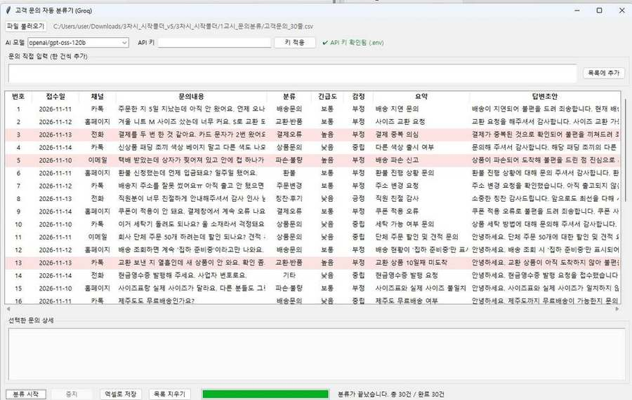
① 프로그램 화면(교육장 PC 실제 화면): 문의 파일을 불러와 [분류 시작]을 누르면, 문의마다 분류·긴급도·요약·답변 초안이 채워집니다. 급한 문의는 분홍색으로 표시됩니다.
| 문의 내용 | 분류 | 급한 정도 | 답장 초안 |
|---|---|---|---|
| 주문한 지 5일 지났는데 아직 안 왔어요. | 배송 | 높음 | 늦어져 죄송합니다. 지금 바로 배송 상황을 확인해… |
| 니트 M 사이즈가 커요. S로 교환 되나요? | 교환·환불 | 보통 | 교환 가능합니다. 받으신 상품을… |
| 결제를 두 번 한 것 같아요. | 결제 | 높음 | 확인해 보니 중복 결제가 맞다면… |
② 결과 엑셀(문의분류_결과.xlsx): 문의마다 분류, 급한 정도, 한 줄 요약, 답장 초안이 붙습니다. (예시 모양)
문의를 읽고 "이건 배송 문의, 급함"을 정하는 일은 AI(Groq)가 하고, 파일 읽기·엑셀 저장은 프로그램이 합니다. 프로그램은 오늘 클로드가 대신 만들어 줍니다. 우리는 말로 부탁만 합니다.
클로드에게 시키면 되지 않나요? 무엇이 다른가요?
문의 분류는 클로드도 잘합니다. STEP 2에서 직접 해 봅니다. 다른 점은 누가, 언제, 무엇으로 하느냐입니다.
| 클로드에게 시키기 (1~2차시 방식) | 오늘 만드는 프로그램 | |
|---|---|---|
| 시작하는 법 | 내가 클로드 앱을 열고 매번 글로 부탁 | 더블클릭 → 버튼 하나 |
| 클로드 앱 | 꼭 켜야 함 | 없어도 됨 |
| 다른 직원이 쓰려면 | 내 클로드 계정이라 못 씀 | 프로그램 파일만 받으면 씀 |
| 매일 반복하려면 | 매일 내가 부탁 | 매일 버튼, 또는 예약해서 자동 |
| 일하는 AI | 클로드 | 프로그램 안에 넣은 AI (Groq, 무료) |
클로드에게 시키는 것은 내가 직접 일하는 것, 프로그램을 만드는 것은 누구나 쓸 수 있는 도구를 남기는 것입니다. 쇼핑몰 AI 상담 같은 실제 AI 서비스도 이렇게, 프로그램 안에서 AI를 불러 씁니다.
2차시 프로그램과는 무엇이 다른가요?
| 2차시 · 사진 정리, 엑셀 합치기 | 3차시 · 고객 문의 분류 | |
|---|---|---|
| 어떤 일 | 규칙만 있으면 되는 일 "찍은 날짜별 폴더로 옮겨라" | 판단이 필요한 일 "이게 환불 문의야, 배송 문의야?" |
| 프로그램 안에 | 코드만 | 코드 + AI |
규칙은 코드가 할 수 있지만, 사람의 글을 읽고 판단하는 것은 코드만으로는 못 합니다. 그래서 오늘은 프로그램 안에 AI를 넣습니다.
시작 폴더 받기
- 아래 초록 버튼을 누릅니다. 구글 드라이브 화면이 열리면 오른쪽 위 다운로드(↓) 아이콘을 눌러 압축 파일을 받습니다.
⬇ 3차시 시작 폴더 내려받기 - 받은 압축 파일(다운로드 폴더의 3차시_시작폴더_v5.zip) 위에서 마우스 오른쪽 버튼 → 압축 풀기(또는 「모두 풀기」) → 압축 풀기 버튼을 누릅니다.
- 안에 이런 폴더가 있는지 확인합니다.
3차시_시작폴더 ├─ 1교시_문의분류 ─ 고객문의_30줄.csv, 한걸음더_고객문의_1000줄.csv └─ 2교시_내위키 ─ CLAUDE.md, raw(교안 1~3차시), wiki
윈도우는 압축을 풀면 3차시_시작폴더_v5 폴더를 만들고 그 안에 3차시_시작폴더를 넣습니다. 클로드에 연결할 폴더는 열었을 때 「1교시_문의분류」와 「2교시_내위키」가 바로 보이는 폴더입니다. 바깥 폴더가 아니라 안쪽 3차시_시작폴더를 고르세요.
폴더가 어디 있는지 모르겠으면 윈도우키 + E로 파일 탐색기를 열고 왼쪽 「다운로드」를 보세요.
오늘의 학습 목표
오늘 수업을 마치면 다음 일곱 가지를 할 수 있습니다.
- API와 API 키가 무엇인지, 그리고 내 프로그램이 AI를 부르는 것이 클로드에게 직접 시키는 것과 무엇이 다른지 내 말로 설명할 수 있다.
- 키를 .env 금고 파일에 숨기고, 프로그램이 거기서 꺼내 쓰게 할 수 있다.
- 클로드에게 직접 시킬 일과 프로그램(+ API)으로 만들 일을 구분하고, 채팅과 코드이 무엇이 다른지 말할 수 있다.
- 상황과 조건을 설명하는 부탁으로 코드 화면에서 화면이 있는 파이썬 프로그램을 만들고, 클로드 없이 더블클릭으로 실행할 수 있다.
- 깃허브에서 스킬을 받아 쓰고, 그 안(SKILL.md)을 열어 볼 수 있다.
- 깃으로 작업 기록을 남기고, 망가진 코드를 기록으로 되돌릴 수 있다.
- 내 위키를 깃허브 비공개 저장소에 올리고, 다른 컴퓨터에서 다시 가져올 수 있다.
1·2차시에는 채팅 창, 코워크, 코드를 비교했습니다. 오늘부터 모든 실습은 클로드 앱의 코드 화면(왼쪽 위 </>)에서만 합니다. (딱 한 번, STEP 3에서 채팅과 코드를 비교할 때만 채팅 창을 엽니다.) 파일 만들기, 프로그램 실행, 깃 기록, 깃허브 올리기까지 전부 코드 화면의 세션에 말로 시킵니다.
크롬 브라우저는 딱 두 번만 씁니다. Groq에서 키를 받을 때, 깃허브에서 저장소(창고)를 만들 때.
클로드 코드 열기
- claude.com/download에서 윈도우용 Claude 앱을 내려받아 설치하고 로그인합니다.
- 코드(왼쪽 위 </> 아이콘)는 유료 요금제(Pro 이상)에서 쓸 수 있습니다. </>를 눌렀을 때 요금제 안내가 나오면 무료 계정인 것입니다.
- 윈도우에서는 깃이라는 무료 프로그램이 깔려 있어야 코드 화면이 움직입니다. 깃은 "파일을 고친 기록을 남겨 주는 프로그램"인데, 무엇인지는 오늘 STEP 4에서 처음부터 배웁니다. 지금은 설치만 하면 됩니다. 클로드 앱이 "Git이 필요하다"고 안내하면 git-scm.com에서 받아, 설치 창에서 계속 「Next」만 누르고 마지막에 「Install」을 누릅니다. 끝나면 Claude 앱을 완전히 껐다 켭니다. 교육장 PC에는 이미 깔려 있습니다.
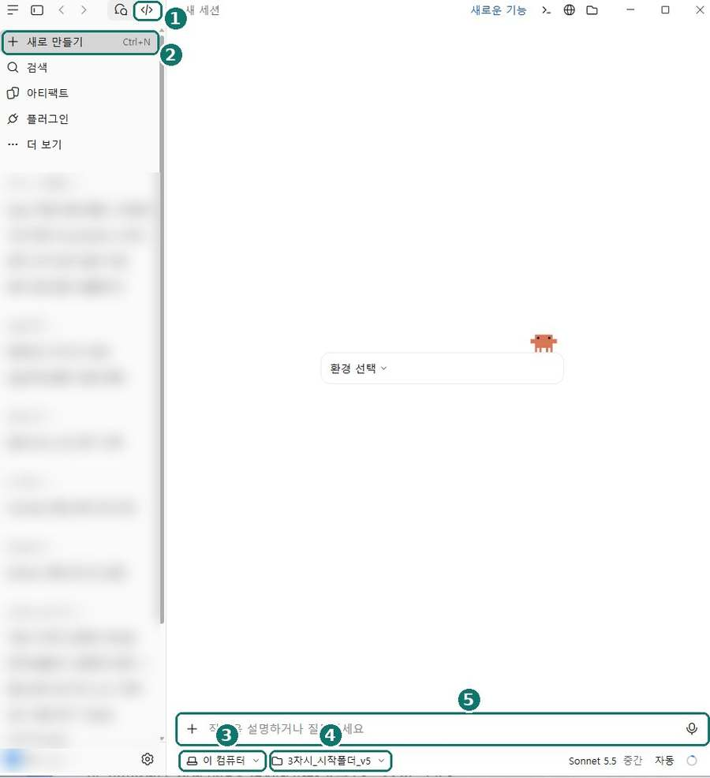
클로드 앱(2026년 11월) 코드 화면입니다. 왼쪽 목록에는 내가 전에 연 세션들이 보입니다(그림에서는 가렸습니다). 맨 위에 "최신 데스크톱 앱이 필요합니다" 같은 안내 띠가 보이면 「업데이트」를 눌러 두세요.
- 바탕화면이나 시작 메뉴에서 Claude 앱을 실행합니다. 로그인이 풀려 있으면 「Google로 계속하기」로 로그인합니다.
- ① 왼쪽 위의 </> 아이콘(코드)을 누릅니다. 그 왼쪽의 말풍선 아이콘은 채팅입니다.
- ② 「+ 새로 만들기」를 누릅니다. 이 세션을 오늘 교안에서는 세션 A라고 부릅니다. STEP 0부터 STEP 5 앞부분까지 계속 이 세션 하나로 합니다. (Ctrl + N도 됩니다) 이것이 새 세션입니다.
- ③ 입력 칸 아래 왼쪽이 「이 컴퓨터」인지 확인합니다. 다른 글자면 눌러서 「이 컴퓨터」를 고릅니다. (화면 가운데 「환경 선택」도 같은 것입니다)
- ④ 그 옆의 폴더 칸을 누르고, 내려받아 압축을 푼 3차시_시작폴더를 고릅니다. (열었을 때 「1교시_문의분류」와 「2교시_내위키」가 바로 보이는 폴더)
- 「이 작업 공간을 신뢰하시겠습니까?」가 나오면 → 신뢰
- ⑤ 입력 칸(「작업을 설명하거나 질문하세요」)에 글을 쓰고 Enter를 누르면 일을 시작합니다.
클로드가 "이 파일을 만들어도 될까요?", "이 명령을 실행해도 될까요?"라고 물으면 내용을 한 번 읽고 허용을 누릅니다.
창에서는 "새 창", 코드에서는 "새 세션"이라고 합니다. 세션 하나 = 직원 한 명. 왼쪽 위 </> 아이콘이 눌려 있고, 입력 칸 아래에 「이 컴퓨터」와 폴더 이름이 보이면 코드에서 일하는 중입니다.
준비 · 파이썬 설치하고 깃 확인하기 필수
왜 하나요? 오늘 만드는 프로그램은 파이썬으로 돌아갑니다. 대부분의 PC에는 파이썬이 없어서, 설치하지 않으면 STEP 3에서 클로드가 "파이썬이 없어 실행해 보지 못했습니다"라고 멈춥니다. 설치에 시간이 걸리니 수업 맨 처음에 해 둡니다.
오늘은 파이썬(프로그램을 만들고 돌리는 무료 프로그램)과 깃(파일을 고친 기록을 남기는 프로그램. STEP 4에서 처음부터 배웁니다)을 씁니다. 방금 연 세션에 붙여 넣습니다. 클로드가 확인하고, 파이썬이 없으면 바로 설치합니다.
이 컴퓨터에 파이썬과 깃(git)이 설치되어 있는지 확인해 줘. 파이썬이 없거나 윈도우 스토어 바로가기만 있으면, winget으로 공식 파이썬을 설치해 줘. (아나콘다는 말고 기본 파이썬으로.) 설치가 끝나면 엑셀 파일을 만드는 부품(openpyxl)도 설치하고, 파이썬과 깃의 버전을 알려 줘. 깃이 없으면 깃(Git for Windows)도 winget으로 설치해 줘.
- 클로드가 설치해도 되는지 물으면 허용, 설치 방법을 고르게 하면 「설치하고 테스트」 쪽을 고릅니다.
- 윈도우가 "이 앱이 디바이스를 변경하도록 허용하시겠습니까?"라고 물으면 예. 관리자 비밀번호를 물으면 손을 들어 주세요.
- "Python 3.…"과 "git version 2.…"이 둘 다 나오면 준비 끝입니다.
이렇게 나오면 준비 끝입니다 (교육장 PC에서 실제로 돌린 화면) 참고 · 사람마다 다르게 나올 수 있어요
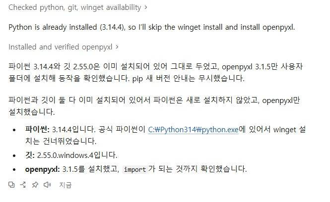
교육장 PC에는 파이썬과 깃이 이미 깔려 있어서 엑셀 부품(openpyxl)만 설치됩니다. 중간에 영어 문장이 보여도 클로드가 일하는 과정을 적은 것이니 신경 쓰지 않아도 됩니다. 집 PC에서는 파이썬이 없어서 설치부터 할 수 있습니다.
윈도우에는 python이라고 치면 마이크로소프트 스토어가 열리는 바로가기만 들어 있는 경우가 많습니다. 이건 파이썬이 아닙니다. 클로드가 "스토어 링크만 있다"고 하면 위 프롬프트대로 설치하게 두면 됩니다.
- 설치는 끝났는데 파이썬을 못 찾는다고 하면: 클로드 앱을 완전히 닫았다가 다시 열고, 같은 세션에서
파이썬이 설치됐는지 다시 확인해 줘 - 깃 설치가 막히면: 교육장에서는 손을 들어 주세요. 깃은 STEP 4 실습 ⑧에서 다시 확인하니 여기서 막혀도 계속 진행하면 됩니다.
이 컴퓨터에 공식 파이썬(아나콘다 말고)과 Git for Windows를 winget으로 설치해 줘. 설치가 끝나면 각각 버전을 확인해 줘.
"이 앱이 디바이스를 변경하도록 허용하시겠습니까?"가 뜨면 「예」. 끝나면 클로드 앱을 완전히 껐다가 다시 켜고 같은 세션을 엽니다.
지금 우리는 몇 번째 계단에 있을까요?
오늘의 흐름
- API와 키: Groq 무료 키를 받아 금고에 넣기
- 고객 문의 30건, 클로드에게 직접 시켜 보기
- 채팅과 코드 비교, 화면 있는 파이썬 프로그램 만들어 클로드 없이 돌리기
- 깃허브에서 스킬 받아 쓰고 열어 보기
- 깃: 기록하고, 망가뜨리고, 되돌리기
- 오늘 배운 것을 내 위키에 쌓기
- 내 위키를 깃허브에 올리기 (USB 없이!)
- 공용 PC 정리와 로그아웃
실습마다 이렇게 봅니다
결과물이 나왔는지보다 내가 없어도, 남이 눌러도 돌아가는가를 봅니다.
AI는 같은 부탁에도 사람마다, 할 때마다 조금씩 다르게 답합니다. 교안에 실은 결과·질문·화면은 강사가 교육장 PC에서 실제로 해 본 한 가지 예입니다. 내 화면이 글자 하나까지 똑같지 않아도 괜찮습니다. 표시가 붙은 곳은 "이런 흐름으로 나오는구나"만 보면 됩니다. 결과 파일이 생기고, 프로그램이 열리고, 엑셀이 나오면 성공입니다.
API와 키, Groq 무료 키 받기
내 프로그램이 AI를 부를 수 있게 전화선을 깔고 비밀번호를 받습니다.
시작 전에 준비
| ✅ 있어야 하는 것 | ▶ 먼저 해 둘 것 |
|---|---|
|
|
이 STEP에서 하는 일
만드는 것: .env 파일 하나. 안에 GROQ_API_KEY=gsk_… 한 줄이 들어 있습니다.
왜 하나요? 오늘 만드는 프로그램 안에서 AI(Groq)를 쓰려면 사용 허가 비밀번호(API 키)가 필요합니다. 클로드 앱은 내 계정으로 로그인해서 쓰지만, 프로그램은 로그인을 못 하니 이 키로 AI를 씁니다.
끝나면 내 폴더는 이렇게 됩니다
API와 키가 뭔가요?
내 프로그램이 AI에게 전화를 걸어 묻고, 답을 받아 옵니다.
- API(에이피아이): 프로그램끼리 대화하는 전화선. 내 프로그램이 이 선으로 AI에게 "이 문의 분류해 줘"라고 전화합니다.
- API 키: 그 전화를 거는 비밀번호. 키가 있어야 AI가 받아 줍니다. 키가 새어 나가면 남이 내 이름으로 전화를 겁니다.
키는 그 전화의 비밀번호입니다
키가 있어야 AI가 전화를 받아 줍니다. 키가 새면 남이 내 이름으로 전화를 겁니다.
키는 금고(.env)에 둡니다
키는 금고 파일에만 두고, 프로그램이 필요할 때 꺼내 씁니다.
왜 키가 필요할까요?
사람은 아이디·비밀번호로 로그인하지만, 프로그램은 키로 자기를 알립니다.
지금 쓰는 클로드 구독과는 무엇이 다른가요?
| 클로드 구독 (지금 쓰는 것) | API | |
|---|---|---|
| 누가 AI를 부르나 | 내가 앱에 앉아서 말을 걸 때 | 내가 만든 프로그램이 혼자 부를 때 |
| 내는 방식 | 매달 정액, 대신 사용 한도 있음 | 쓴 만큼 (Groq는 무료 한도 안에서 0원) |
API는 프로그램이 AI에게 거는 전화, 키는 그 전화의 비밀번호, .env는 그 비밀번호를 넣어 두는 금고입니다.
참고 · 커넥터(MCP)와 API는 뭐가 다른가요?
지금까지 우리는 클로드에 구글 드라이브나 지메일을 붙일 때 커넥터를 썼습니다. 2차시에 "MCP는 다른 말로 커넥터"라고 했지요. 그런데 오늘 갑자기 API가 나옵니다. 둘 다 "연결"인데, 누가 쓰느냐가 다릅니다.
| 커넥터 (MCP) | API | |
|---|---|---|
| 누가 쓰나 | 클로드가 다른 서비스를 쓸 때 | 내가 만든 프로그램이 다른 서비스를 쓸 때 |
| 언제 움직이나 | 내가 클로드와 대화하는 동안만 | 클로드가 없어도, 내가 자리에 없어도 |
| 연결하는 법 | 클로드 설정에서 「연결」 버튼, 로그인 | 키를 받아 금고(.env)에 넣기 |
| 지금까지 쓴 예 | 구글 드라이브, 지메일, 패들렛 | 오늘 처음: Groq |
커넥터는 클로드의 손이고, API는 내 프로그램의 손입니다. 사실 커넥터도 속을 열어 보면 API로 만들어져 있습니다. 클로드가 쓰기 좋게 포장해 둔 것이 커넥터입니다.
Groq는 어떤 회사인가요?
Groq는 AI를 직접 만들지 않고, 남이 공개한 AI를 빠르게 돌려서 빌려주는 곳입니다. 우리 프로그램은 API와 키로 그 AI를 빌려 씁니다.
Groq(그록)는 2016년 미국 캘리포니아에서 시작한 회사입니다. 창업자는 구글에서 AI 전용 칩을 만들던 조너선 로스입니다.
정리하면 Groq는 AI를 만드는 회사가 아니라, 공개된 AI를 아주 빠르게 돌려 주는 회사입니다. 쉽게 말해 다른 곳이 만든 AI 모델을 가져와, 엄청 빠른 전용 칩(LPU)으로 돌려 주는 곳입니다. 2025년 12월에는 엔비디아가 약 200억 달러 규모로 이 칩 기술을 쓰는 계약을 맺었고, GroqCloud 서비스는 그대로 운영되고 있습니다.
왜 다들 Groq로 연습하나요?
| 이유 | 설명 |
|---|---|
| 무료 | 카드 등록 없이 구글 계정으로 가입하면 키를 줍니다. |
| 빠름 | 답이 눈 깜짝할 사이에 나옵니다. 문의 30건이 몇 초면 끝납니다. |
| 표준 방식 | 프로그램이 AI를 부르는 방식이 오픈AI와 같아서, 클로드가 코드를 쉽게 짜고 나중에 다른 AI로 바꾸기도 쉽습니다. |
우리는 여기서 무엇을 하나요?
- GroqCloud에 가입해 무료 키를 하나 받습니다. (이 STEP)
- 클로드가 만든 내 프로그램이 그 키로 Groq의 AI를 불러 고객 문의를 분류합니다. (STEP 3)
- 오늘은 내 컴퓨터에서 더블클릭으로 도는 프로그램까지입니다. 인터넷 주소가 있는 웹앱은 8차시에 만듭니다.
- 무료에는 한도가 있습니다. 1분에, 하루에 부를 수 있는 횟수가 정해져 있어 너무 많이 시키면 잠깐 쉬어야 합니다.
- 모델 목록이 자주 바뀝니다. 그래서 실습 프롬프트에 "모델 목록을 먼저 확인해서 골라 줘"를 넣었습니다.
- 실제 고객 정보는 넣지 않습니다. 연습용 자료만 씁니다.
- Grok과 다른 회사입니다. Groq(q로 끝남)는 오늘 쓰는 서비스, Grok(k로 끝남)은 일론 머스크 회사 xAI의 챗봇입니다.
실습 ① Groq 무료 키 받기 필수
왜 하나요? 오늘 만드는 프로그램이 Groq의 AI를 쓰려면 사용 허가 비밀번호(키)가 필요합니다.
- 크롬을 열고 주소창에
console.groq.com/keys를 입력한 뒤 Enter. (여기 console.groq.com/keys를 눌러도 바로 열립니다) - 로그인 화면이 나오면 Continue with Google(구글로 계속하기)을 누르고 내 구글 계정을 고릅니다. 처음이면 약관 동의 후 넘어갑니다.
- 화면 오른쪽 위 메뉴에서 API Keys를 누릅니다. (그림 ①)
- ＋ Create API Key 버튼을 누릅니다. (그림 ②)
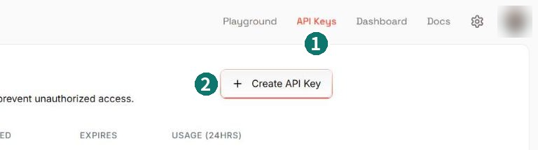
- 작은 창이 뜹니다. Display Name(이름) 칸에 알아보기 쉬운 이름을 씁니다. 예:
문의분류. 이름은 나만 보는 꼬리표라 무엇이든 괜찮습니다. (그림 ③에는 yangcheon으로 써 있습니다) - Expiration(만료)은 No expiration 그대로 둡니다.
- 오른쪽 아래에 "확인 중…"이 잠깐 보였다가 Submit 버튼으로 바뀝니다. 사람인지 자동으로 확인하는 것이니 기다리면 됩니다. Submit을 누릅니다. (그림 ④)
- gsk_로 시작하는 긴 글자가 나타납니다. 이것이 키입니다. Copy(복사) 버튼을 누릅니다.
- 이 창을 닫지 말고 바로 아래 실습 ②로 갑니다.
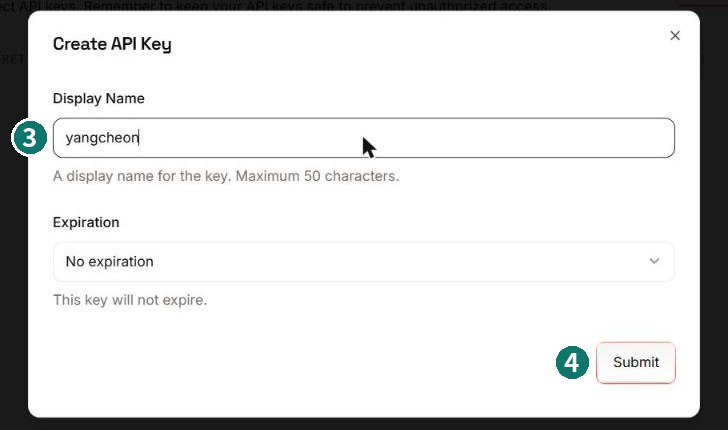
키는 이 화면에서 딱 한 번만 보입니다. 놓쳤다면 걱정 말고 Create API Key로 새로 하나 만들면 됩니다.
영어 화면이 낯설면 크롬 화면 빈 곳에서 마우스 오른쪽 → 「한국어로 번역」을 눌러도 됩니다. 메뉴 이름이 조금 달라도 API Keys라는 글자만 찾으면 됩니다.
실습 ② 키를 금고에 넣기 (.env 파일) 필수
왜 하나요? 키를 코드에 그대로 쓰면, 파일을 나누거나 깃허브에 올릴 때 키가 함께 새어 나갑니다. 그래서 키는 따로 금고 파일에 둡니다.
.env(닷 엔브) 파일은 비밀 정보만 따로 넣어 두는 금고 파일입니다. 프로그램은 키를 코드에 쓰지 않고 이 금고에서 꺼내 씁니다.
1) 클로드에게 빈 금고를 만들게 합니다
3차시_시작폴더를 연결한 세션의 입력 칸에 아래 프롬프트를 붙여 넣고 Enter. 파일을 만들어도 되는지 물으면 허용을 누릅니다.
1교시_문의분류 폴더에 .env 파일을 만들고 안에 'GROQ_API_KEY=' 한 줄만 적어 줘. 키 값은 내가 메모장으로 열어서 직접 붙여 넣을게. 그리고 나중에 이 폴더를 깃에 저장하더라도 .env는 절대 저장되지 않게 .gitignore 파일도 만들어 줘.
2) 내 손으로 키를 넣습니다
- 윈도우키 + E로 파일 탐색기를 열고 3차시_시작폴더 → 1교시_문의분류 폴더로 들어갑니다.
- .env라는 파일이 새로 생겼습니다. (이름이 점으로 시작하고, 종류가 「ENV 파일」로 보입니다)
- .env 파일 위에서 마우스 오른쪽 버튼 → 연결 프로그램 → 메모장. 메모장이 목록에 없으면 「다른 앱 선택」에서 메모장을 고릅니다.
- 메모장에
GROQ_API_KEY=한 줄이 보입니다. 등호(=) 바로 뒤를 클릭하고 Ctrl + V로 키를 붙여 넣습니다. - 이렇게 보이면 맞습니다:
GROQ_API_KEY=gsk_어쩌고저쩌고(띄어쓰기·따옴표 없이 한 줄) - Ctrl + S로 저장하고 메모장을 닫습니다.
메모장에서 이렇게 보여야 합니다
프롬프트에 나온 .gitignore(깃이그노어)는 "깃에 기록하지 않을 파일 목록"입니다. 여기에 .env를 적어 두면, 나중에 깃허브에 올릴 때 키가 따라 올라가지 않습니다. STEP 4에서 다시 나옵니다.
3) 키가 맞는지 시험합니다
프로그램을 만들기 전에 키가 제대로 들어갔는지 먼저 확인합니다. 여기서 확인해 두면 STEP 3에서 헤매지 않습니다.
1교시_문의분류 폴더의 .env에 있는 키로 Groq에 연결이 되는지 시험해 줘. 키 값은 화면에 절대 보여 주지 마. 연결이 됐는지와, 지금 쓸 수 있는 모델 이름 몇 개만 알려 줘.
- "연결됐습니다"와 모델 이름이 나오면 성공입니다. Groq 창은 닫아도 됩니다.
- 401 또는 Invalid API Key가 나오면 키가 잘못 들어간 것입니다. 메모장으로 .env를 다시 열어 위 그림과 비교하고, 안 되면 Groq에서 키를 새로 만들어 붙여 넣습니다.
채팅에 붙인 키는 대화 기록에 남습니다. 비밀번호를 단톡방에 올리지 않는 것과 같은 습관입니다. 키는 내 손으로 금고에만.
됩니다. 프로그램 뼈대는 그대로 두고 AI만 바꾸면 됩니다. 다만 클로드 API는 프로 구독과 따로 결제해야 해서 오늘은 무료인 Groq를 씁니다. 나중에 더 매끄러운 한국어 답변이 필요하면 그때 갈아 끼우면 됩니다. AI는 갈아 끼우는 부품입니다.
이 STEP에서 기억할 한 가지
API는 내 프로그램이 AI에게 거는 전화선, 키는 그 비밀번호. 키는 채팅창이 아니라 금고(.env)에.
고객 문의 30건, 먼저 클로드에게 직접
먼저 클로드에게 직접 시켜 봅니다. 그리고 언제 직접 시키고 언제 프로그램으로 만들어야 하는지 가려 봅니다.
시작 전에 준비
| ✅ 있어야 하는 것 | ▶ 먼저 해 둘 것 |
|---|---|
|
|
이 STEP에서 하는 일
만드는 것: 아직 프로그램은 없습니다. 클로드에게 문의 30건을 직접 분류시켜 결과 표를 화면으로 봅니다.
왜 하나요? 오늘 프로그램이 할 일을 먼저 클로드로 해 봅니다. 그리고 "이렇게 잘 되는데 왜 프로그램이 필요하지?"에 답을 찾습니다.
실습 ③ 먼저, 클로드에게 직접 시켜 보기 필수
왜 하나요? 오늘 프로그램이 할 일을 먼저 클로드로 해 보며, 결과가 어떤 모습인지 눈으로 봅니다.
1교시_문의분류 폴더의 고객문의_30줄.csv(csv는 쉼표로 칸을 나눈 단순한 표 파일로, 엑셀로 열립니다)에는 엑셀 한 줄에 문의가 하나씩, 모두 30건이 들어 있습니다. 3차시_시작폴더를 연결한 세션에 그대로 시켜 봅니다.
1교시_문의분류 폴더의 고객문의_30줄.csv를 읽고, 문의 30건을 배송 / 교환·환불 / 결제 / 상품문의 / 불량·파손 / 칭찬 / 기타로 분류해서 표로 보여 줘. 문의마다 급한 정도(높음·보통·낮음)와 한 줄 요약도 붙여 줘.
이런 표가 나옵니다 (교육장 PC에서 실제로 나온 결과 중 일부) 참고 · 사람마다 다르게 나올 수 있어요
| 번호 | 분류 | 급한 정도 | 한 줄 요약 |
|---|---|---|---|
| 1 | 배송 | 보통 | 주문 5일이 지났는데 아직 도착하지 않음 |
| 3 | 결제 | 높음 | 카드 결제가 이중으로 된 것 같음 |
| 5 | 불량·파손 | 높음 | 상자가 찢어지고 안의 컵이 깨져 도착 |
| 25 | 상품문의 | 낮음 | 머플러 그레이의 재입고 시점 문의 |
| 26 | 배송 | 높음 | 문 앞에 두고 갔다는데 물건이 없음 (분실 의심) |
그 아래에 분류별 건수(배송 8, 상품문의 6, 결제 5 …), 급한 정도별 건수, "먼저 처리할 6건", "분류가 애매했던 건"까지 정리해 줍니다. 사람마다 결과가 조금씩 다를 수 있습니다.
- 급한 정도의 기준은 클로드가 스스로 정했습니다. "이중결제·분실·기한 있는 요청은 높음" 같은 기준을 알려 줍니다. 우리 가게 기준과 맞는지는 사람이 봐야 합니다.
- 애매한 건은 애매하다고 알려 줍니다. 예: 오배송은 교환·환불일까, 불량·파손일까. AI가 한 판단은 사람이 확인하는 습관이 필요합니다.
- 25번 "재입고 문의"는 맞는 칸이 없어서 상품문의로 들어갔습니다. STEP 4에서 우리 프로그램에 '재입고 문의' 분류를 새로 추가하는 이유가 이것입니다.
잘 나옵니다. 빠르고, 분류도 꽤 정확합니다.
문의 30건을 한 번만 처리할 거라면 이렇게 클로드에게 직접 시키는 것이 정답입니다. 굳이 프로그램을 만들 필요가 없습니다. 그럼 왜 다음 실습을 할까요? 질문을 바꿔 봅니다.
질문을 바꿔 봅니다 · 누가 AI를 부르나
| 누가 AI를 부르나 | 흐름 | |
|---|---|---|
| 1~2차시까지 | 내가 부른다 | 나 → 클로드 → 결과 |
| 오늘 | 내 프로그램이 부른다 | 나 → 내 프로그램 → Groq(AI) → 결과 |
차이는 "누가 AI에게 말을 거느냐"입니다. 내가 말을 걸어야 하는 AI는 내가 앉아 있을 때만 일합니다. 프로그램이 말을 거는 AI는 내가 없어도, 내가 아닌 사람이 눌러도 일합니다.
쇼핑몰의 AI 상담, 회의록을 자동으로 요약해 주는 앱, 문서 도구에 들어 있는 AI 기능. 이런 서비스에서 직원이 뒤에서 클로드 창에 붙여 넣고 있는 것이 아닙니다. 서비스 프로그램이 API로 AI를 부르는 것입니다. 오늘은 그 뒷모습을 가장 작게 만들어 보는 날입니다.
그래서 필요해지는 세 장면
특히 ③이 결정적입니다. 8차시에 만드는 "질문하면 답하는 내 앱"은 인터넷의 손님이 질문합니다. 그때 답하는 AI는 내 컴퓨터의 클로드 앱이 될 수 없습니다. 프로그램이 API로 AI를 부르는 방법밖에 없습니다.
| 이런 일이라면 | 이렇게 |
|---|---|
| 한 번만 하고, 결과를 내가 바로 볼 일 (30건 정도) | 클로드에게 직접 (실습 ③처럼) |
| 매일 반복 + 규칙만 있는 일 (이름 바꾸기, 엑셀 합치기) | 프로그램만 (2차시, AI 필요 없음) |
| 매일 반복 + 판단이 필요한 일 (문의 분류, 답장 초안) | 프로그램 + API (오늘) |
| 내가 없을 때도 돌아가야 하는 일 | 프로그램 + API + 예약 실행 |
| 동료나 손님이 써야 하는 일 | 프로그램 + API → 웹앱 (8차시) |
오늘의 30건은 연습용이라 작습니다. 오늘 배우는 것은 "30건 분류"가 아니라 "내 프로그램이 AI를 부르게 만드는 방법"입니다. 이 방법 하나로 자동 분류기도, 손님에게 답하는 앱도 만듭니다.
쉽게 말하면 · 커피 이야기
그리고 나는 더블클릭만 합니다.
n8n이나 메이크 같은 자동화 도구를 써 보신 분께: 클로드는 흐름을 짜 주는 사람이고, Groq는 그 흐름 안에서 일하는 AI 부품이라고 보시면 됩니다.
문의 하나마다 따로 전화하지 않고, 20건을 한 통화에 몰아서 묻는 것입니다. 무료로 빌려 쓰는 AI는 통화 횟수 제한이 있어서 이렇게 해야 안 막힙니다.
판단은 AI, 규칙은 코드. 파일 읽기·묶기·엑셀 저장은 코드가 공짜로 하고, AI는 판단하는 부분에만 씁니다.
이 STEP에서 기억할 한 가지
한 번 할 일은 클로드에게 직접. 반복될 일, 남이 쓸 일은 내 프로그램이 AI를 부르게.
화면 있는 프로그램 만들기, 그리고 스킬 받아 쓰기
채팅과 코드의 차이를 눈으로 확인하고, 클로드가 화면 있는 프로그램을 완성하게 한 뒤, 남이 만든 스킬을 깃으로 받아 써 봅니다.
시작 전에 준비
| ✅ 있어야 하는 것 | ▶ 먼저 해 둘 것 |
|---|---|
|
|
이 STEP에서 하는 일
만드는 것: 실행하기.bat를 더블클릭하면 뜨는 문의 분류 프로그램, 그리고 그 프로그램이 만든 문의분류_결과.xlsx.
왜 하나요? STEP 2는 내가 클로드 앱을 열고 부탁해야 했습니다. 이 프로그램은 클로드 앱 없이, 누구나 더블클릭으로 같은 일을 합니다.
끝나면 내 폴더는 이렇게 됩니다
실습 ④ 채팅과 코드, 같은 부탁을 해 보기 필수
왜 하나요? "채팅에서도 프로그램 만들어 주던데?" 하는 궁금증을 직접 확인합니다.
요즘 클로드는 채팅에 내 폴더를 붙이면 채팅에서도 프로그램 파일을 만들어 줍니다. 그럼 코드 화면은 왜 쓸까요? 같은 부탁을 채팅에 해 보고, 클로드가 어디서, 무엇으로 시험했는지를 봅니다.
- 클로드 앱 왼쪽 위의 말풍선 아이콘(채팅)을 누르고 「+ 새로 만들기」로 새 채팅을 엽니다.
- 입력 칸의 ＋에서 3차시_시작폴더를 붙입니다. 내 메시지 위에 「폴더」 카드가 보이면 붙은 것입니다.
- 아래 프롬프트를 붙여 넣고 Enter. 다 끝날 때까지 기다립니다.
- 코드는 읽지 말고, 클로드의 마지막 설명에서 "실제로 돌려 봤는지"를 찾아봅니다.
Groq API로 고객 문의를 분류하는 파이썬 프로그램을 만들어 줘. 화면이 있고, 결과는 엑셀 파일로 저장되게 해 줘.
교육장 PC에서 실제로 해 본 결과, 클로드의 마지막 설명은 이랬습니다 참고 · 사람마다 다르게 나올 수 있어요
그래서 채팅이 만든 프로그램을 실제로 열어 「분류 시작」을 눌러 보니 참고 · 사람마다 다르게 나올 수 있어요
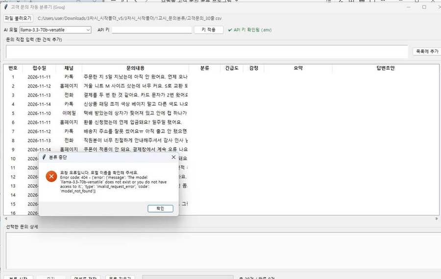
창은 뜨고 문의 30건도 불러왔지만, 분류를 시작하자 "모델 이름을 확인해 주세요 (404)" 오류로 멈췄습니다. 프로그램에 적힌 AI 모델이 지금 Groq에 없는 옛 모델이었기 때문입니다. 가짜 응답으로만 시험했으니 이 문제를 알 수 없었던 것입니다. 진짜로 돌려 봐야 진짜 문제가 보입니다.
중간 과정을 펼쳐 보면 내 PC 주소(C:\Users\…)가 아니라 $HOME/mnt/… 같은 클라우드 작업 공간 주소가 보이고, "이 작업 공간에서는 화면을 띄울 수 없어 가짜로 시험한다"는 말도 나옵니다. 채팅은 내 폴더를 클라우드의 다른 컴퓨터로 가져가서 일한 것입니다.
| 채팅 + 폴더 | 코드 · 이 컴퓨터 | |
|---|---|---|
| 어디서 일하나 | 클라우드의 다른 컴퓨터 | 내 윈도우 PC |
| 만든 파일 | ✅ 내 폴더에 들어옴 | ✅ 내 폴더에 들어옴 |
| 시험 | 가짜 AI 응답으로 | 내 키로 진짜 Groq를 불러서 |
| 프로그램 창 띄워 보기 | ❌ 못 띄움 | ✅ |
| 내 PC에 파이썬 설치 | ❌ | ✅ |
| 오류가 나면 | 내가 실행해 보고 다시 물어봄 | ✅ 그 자리에서 고쳐 다시 돌림 |
같은 일을 코드(이 컴퓨터)에서 시키면 중간 과정에 C:\Python314\python.exe처럼 내 윈도우 PC 주소가 보이고, 할 일 목록 마지막에 "실제 Groq로 30건 분류 검증"이 들어갑니다. 내 PC에서 진짜로 돌려 본다는 뜻입니다.
채팅은 다른 컴퓨터에서 만들어 넘겨주고, 코드(이 컴퓨터)는 내 컴퓨터에서 직접 돌려 보고 고쳐 줍니다. 택배로 받은 기계와, 우리 사무실에 와서 설치하고 돌려 보고 가는 기사님의 차이입니다.
- "시험했다"는 말을 그대로 믿지 않기. 어디서, 무엇으로 시험했는지 봅니다. 가짜 응답으로 낸 숫자를 진짜 결과로 착각하기 쉽습니다.
- 폴더를 맡길 때는 안에 무엇이 있는지 알고 맡기기. 폴더를 통째로 붙이면 키가 든 .env도 같이 넘어갑니다.
채팅이 만든 문의분류기.py, 실행.bat, requirements.txt, __pycache__ 폴더가 1교시_문의분류에 남습니다. 실습 ⑤에서 코드에게 지우고 새로 만들게 하니 그냥 두세요.
그리고 방금 부탁은 한 줄짜리 짧은 요구였습니다. 코드로 가기 전에, 부탁을 어떻게 해야 원하는 프로그램이 나오는지 먼저 봅니다.
짧은 부탁과 상황을 설명한 부탁은 결과가 다릅니다
실습 ④의 부탁은 "분류하는 프로그램 만들어 줘" 한 줄이었습니다. 이렇게 짧게 부탁하면 정하지 않은 빈칸을 클로드가 마음대로 채웁니다.
| 정하지 않은 것 | 실습 ④에서 클로드가 마음대로 정한 것 (실제) |
|---|---|
| 파일 이름 | 문의분류기.py, 실행.bat (교안·위키와 다른 이름) |
| 분류 기준 | 9가지 (배송문의, 교환·반품, 환불, 결제오류 …) · 우리 가게 7가지와 다름 |
| 무엇을 더 할지 | "감정"까지 분류, 화면에서 키를 직접 넣는 칸 |
| 몇 건씩 보낼지 | 10건씩 |
| 확인 방법 | 가짜 응답으로만 시험 (진짜 30건은 안 돌려 봄) |
그래서 실습 ⑤에서는 내 상황과 조건을 다 적은 부탁을 씁니다. 실습 ⑤ 프롬프트의 줄마다 무엇을 정했는지 보세요.
| 프롬프트의 이 줄 | 무엇을 정했나 | 안 쓰면 |
|---|---|---|
| 1교시_문의분류 폴더의 고객문의_30줄.csv를… | 무엇을 처리하나 | 예시 문의를 지어냄 |
| 화면이 있는 프로그램으로 만들어 줘: [문의 파일 고르기]… | 누가 어떻게 쓰나 (코드 모르는 직원도 버튼으로) | 까만 창에 명령어를 쳐야 하는 프로그램 |
| 키는 .env의 GROQ_API_KEY에서 읽고… | 비밀번호 관리 | 키가 코드 안에 들어가 새어 나감 |
| 분류(배송 / 교환·환불 / …) ② 급한 정도 … | 우리 가게 기준 | 클로드 마음대로 분류 |
| '문의분류_결과.xlsx'로 저장… 요약 시트 | 결과물 모양 | 원하지 않는 형식 |
| '문의분류_본체.py', '실행하기.bat' | 파일 이름 (교안·위키와 맞추기) | 영어 이름, 나중에 찾기 어려움 |
| 20건씩 묶어서… 잠깐 쉬어 줘 | 무료 한도 지키기 | 중간에 429 오류로 멈춤 |
| 화면 없이 돌려서 30건이 모두 분류됐는지 확인해 줘 | 끝났는지 확인하는 법 | 만들고 확인 없이 끝남 |
무엇을 (어떤 파일·어떤 일) + 누가 어떻게 쓰나 + 지켜야 할 것 (키·한도) + 결과물 모양 + 확인 방법. 이 다섯 가지를 적으면 클로드가 마음대로 채우는 빈칸이 사라집니다.
이런 프롬프트를 내가 처음부터 못 쓰겠다면?
괜찮습니다. 처음부터 이렇게 쓰는 사람은 없습니다. 상황만 말하고, 클로드에게 질문을 받으세요. 클로드가 물어보는 것에 답하다 보면 위와 같은 요구 목록이 저절로 만들어집니다. 오늘 교안의 실습 ⑤ 프롬프트도 이렇게 만들었습니다.
쇼핑몰 고객 문의를 매일 분류하는 프로그램을 만들고 싶어. 나는 코드를 모르는 직장인이고, 회사 윈도우 PC에서 다른 직원도 더블클릭으로 쓸 수 있어야 해. AI는 무료인 Groq API를 쓸 거고, 키는 .env 파일에 넣어 뒀어. 바로 만들지 말고, 좋은 프로그램을 만드는 데 필요한 것을 나에게 먼저 물어봐 줘. 질문은 한 번에 3개 이하로, 고르기 쉽게 보기를 붙여 줘. 다 물어보면 내 답을 정리한 '요구 목록'을 보여 주고, 내가 좋다고 하면 그때 만들어 줘.
붙여 넣으면 이렇게 질문이 나옵니다 (교육장 PC 실제 화면) 참고 · 사람마다 다르게 나올 수 있어요
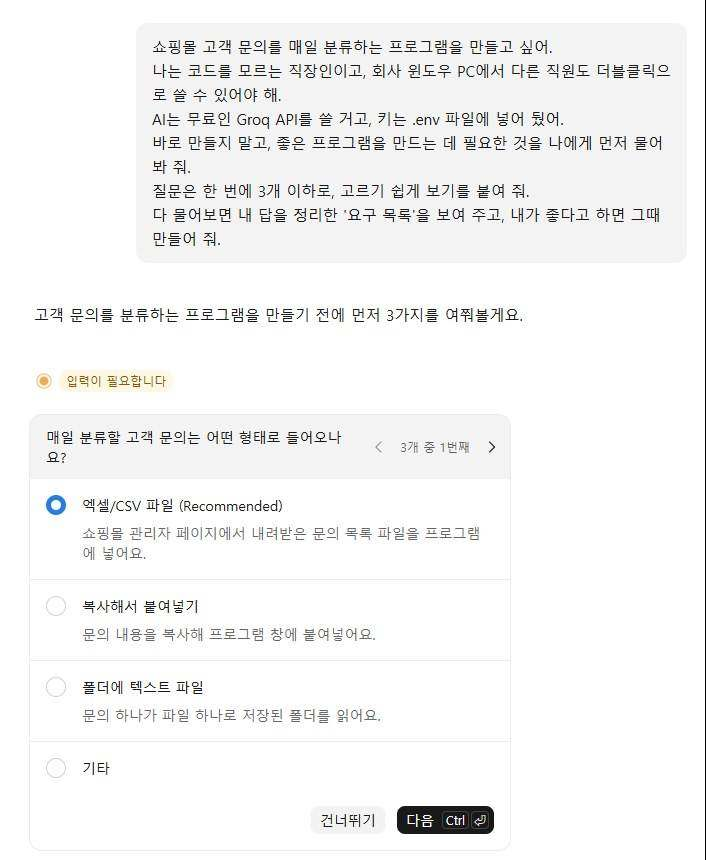
- 동그라미 ○는 하나만, 네모 ☐는 여러 개 고를 수 있습니다. 위에 "(여러 개 선택 가능)"이 보이면 네모입니다.
- 고른 뒤 「다음」, 그 묶음의 마지막 질문은 「제출」을 누릅니다. 오른쪽 위 "3개 중 1번째"가 지금 위치입니다.
- (Recommended)는 클로드의 추천입니다. 잘 모르면 추천을 고르되, 내 일에 정해진 기준이 있으면 추천 대신 내 기준을 고릅니다.
- 보기에 내 답이 없으면 「기타」를 누르고 직접 적습니다.
- 질문의 순서와 내용은 사람마다 다릅니다. 아래 표는 한 가지 예입니다. 비슷한 질문이 나오면 표를 참고해 고르세요.
- 질문은 한 번에 끝나지 않습니다. 고른 답에 따라 다음 질문 묶음이 이어집니다. 보기로 못 묻는 것(예: 분류 이름)은 글로 적어 달라고 합니다.
실제로 나온 질문과, 우리가 고른 답 (교육장 PC 시연) 참고 · 사람마다 다르게 나올 수 있어요
| 클로드의 질문 | 고른 답 | 왜 이걸 골랐나 · 배울 점 |
|---|---|---|
| 문의는 어떤 형태로 들어오나요? | 엑셀/CSV 파일 (추천) | 쇼핑몰에서 내려받는 파일이 csv라서 |
| 문의를 어떤 종류로 나눌까요? | 내가 정한 분류 | 추천은 "기본 5종류"였지만 우리 가게는 7종류. 추천이 늘 정답은 아닙니다. 「AI가 알아서」는 "날마다 달라질 수 있다"고 스스로 경고합니다. |
| 결과를 어떻게 받을까요? | 둘 다 (화면 + 엑셀) | 진행은 화면으로 보고, 결과는 엑셀로 남기려고 |
| 분류 목록은 어떻게 알려 줄래요? | 지금 채팅으로 적기 (추천) | 「목록 파일로 따로 관리」를 고르면 나중에 메모장만 고쳐 분류를 추가할 수 있습니다 (한 걸음 더) |
| 하루에 몇 건 처리하나요? | 50~300건 | 이 답 때문에 "무료 한도에 안 걸리게 나눠 보내기"가 들어갑니다. 교안 프롬프트의 "20건씩 묶어서"와 같은 이야기입니다. |
| 분류 외에 함께 만들 항목은? (여러 개) | ☑ 긴급도 ☑ 한 줄 요약 ☑ 답변 초안 | 네모 칸이라 셋 다 체크 |
| 직원 PC에 파이썬이 깔려 있나요? | 기타 → 보안 조건 직접 적기 | 추천은 "exe 한 파일"이었지만 회사 백신에 걸리기 쉬워서, 아래 「동료 PC에 줄 때」 프롬프트를 적었습니다. |
| 문의 파일은 어떻게 불러올까요? | 파일 선택창에서 고르기 (추천) | 처음 쓰는 직원에게 가장 쉬움 |
| 고객 이름·전화번호·주소가 있다면? | 자동으로 가려서 보내기 (추천) | 문의는 바깥 회사(Groq)로 나갑니다. 개인정보는 가리고 보내야 합니다. |
| 문의 내용이 든 칸은 어떻게 찾을까요? | 프로그램이 자동으로 찾기 (추천) | 다른 쇼핑몰 파일처럼 칸 이름이 달라도 찾아 줍니다 |
질문 화면 모음 참고 · 사람마다 다르게 나올 수 있어요
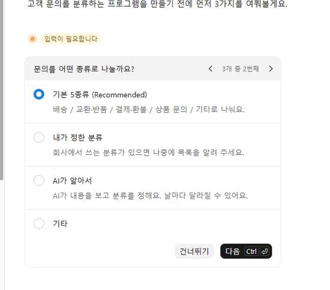
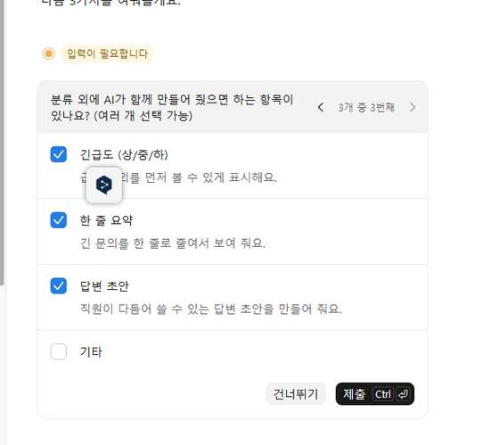
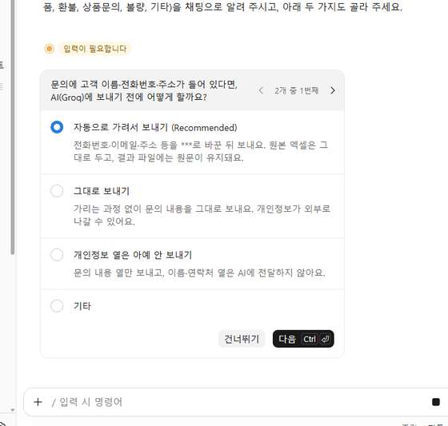
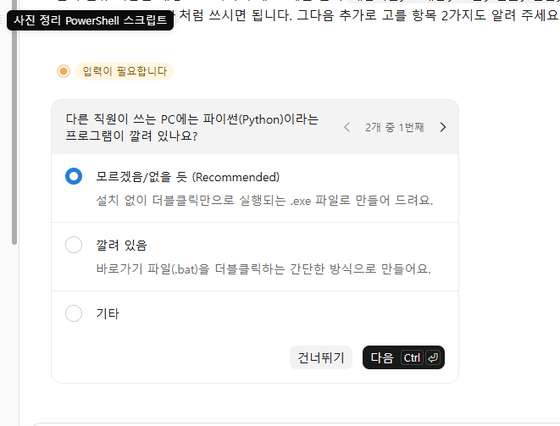
마지막으로 분류 이름을 글로 적어 달라고 합니다. 분류마다 짧은 설명을 붙이면 더 정확하게 나눕니다.
분류는 이 7가지로 해 줘. - 배송: 배송 지연, 배송 조회, 주소 변경, 분실, 해외·지역 배송 문의 - 교환·환불: 사이즈·색상 교환, 반품, 환불 진행·입금 문의 - 결제: 이중 결제, 쿠폰·할인 오류, 현금영수증, 입금 확인 - 상품문의: 색상·사이즈·소재·세탁법, 단체 주문, 포장 문의 - 불량·파손: 깨짐, 찢어짐, 불량, 다른 상품이 옴(오배송) - 칭찬: 감사 인사, 좋은 후기 - 기타: 회원 탈퇴, 포인트·적립금 등 위에 안 맞는 것
그러면 「요구 목록」이 나옵니다 참고 · 사람마다 다르게 나올 수 있어요
클로드가 지금까지의 답을 정리해 보여 줍니다. 실제로 나온 목록의 큰 줄기는 이랬습니다.
| 항목 | 요구 목록에 적힌 내용 (요약) |
|---|---|
| 1. 하는 일 | 문의 파일을 Groq로 분류. 7가지 분류 + 긴급도(상/중/하)·한 줄 요약·답변 초안 |
| 2. 사용 방법 | 실행 파일 더블클릭 → 파일 고르기 → 문의 칸 자동 찾기 → 나눠 보내며 진행 표시 → 화면 표 + 엑셀 저장(원본은 안 건드림, 실패한 건은 "확인 필요") |
| 3. 보안·안전 | 키는 .env에만 · 인터넷은 Groq에만 · 개인정보 가리기(이름은 다 못 가릴 수 있다는 한계도 적음) · 윈도우 경고 안내문 |
| 4. 만드는 방식 | 파이썬 포터블 + 폴더 (아래 「동료 PC에 줄 때」 표 참고) |
| 5. 결과물 | 실행 파일, 프로그램 폴더, .env 예시, 사용설명서, 결과 폴더 |
| 6. 확인할 점 | 여러 명이 같은 키를 쓰면 무료 한도를 나눠 씀 · 긴급도와 답변 초안은 참고용이라고 표시 |
- 키가 프로그램 밖(.env)에 있나? 남에게 줄 폴더에서 .env가 빠지나?
- 개인정보를 가리고 보내나?
- 진짜로 시험하나? "실제 Groq로 30건 분류해 보기"가 없으면 덧붙입니다. 없으면 가짜 시험만 하고 끝날 수 있습니다.
- 파일 이름이 정해졌나? 없으면 덧붙입니다.
좋아. 다만 몇 가지 덧붙여 줘. - 프로그램 본체는 '문의분류_본체.py', 더블클릭하는 파일은 '실행하기.bat'로 해 줘. - 직원에게 줄 폴더는 1교시_문의분류 안에 '직원용_문의분류기' 폴더로 따로 만들어 줘. - 다 만들면 이 폴더의 내 .env 키로 진짜 Groq에 연결해서 고객문의_30줄.csv 30건을 실제로 분류해 보고, 결과 엑셀이 열리는지까지 확인해 줘. 확인할 때 화면 창은 띄우지 말고, 화면은 내가 직접 열어 볼게. - 포터블 파이썬에 화면 부품(tkinter)을 넣는 게 안 되면, 바꾸기 전에 먼저 말해 줘.
그러면 클로드가 할 일 목록(폴더와 환경 확인 → 포터블 파이썬 준비 → 본체·실행하기.bat 작성 → 직원용 폴더와 안내문 → 실제 Groq로 30건 분류 검증)을 만들고 내 윈도우 PC에서 일을 시작합니다. 중간에 빨간 "실패"가 보여도 대부분은 확인용 명령 하나가 "없음"으로 끝난 것이라, 클로드가 보고 이어 갑니다.
질문받기는 사람마다 질문과 답이 달라져서 결과 프로그램도 달라집니다. 그래서 수업에서는 강사 시연으로 함께 보고, 실습 ⑤는 모두 같은 교안 프롬프트로 합니다. 질문받기를 직접 해 보는 건 집에서 내 업무로 바꿔서 해 보세요.
첫 줄과 둘째 줄만 내 일로 바꾸면 됩니다. 예: "매주 거래처 견적서를 정리하는 프로그램", "강의 신청자 명단을 정리하는 프로그램".
교안의 실습 ⑤ 프롬프트를 쓰는 대신, 위 프롬프트로 클로드와 질문을 주고받아 내 요구 목록을 만든 뒤 프로그램을 만들어 보세요. 결과를 교안 프롬프트와 비교해 보면 내가 빠뜨린 조건이 보입니다.
동료 PC에 줄 때 · 보안에 덜 걸리게 만들기 한 걸음 더
왜 하나요? 내 PC에서 잘 돌아도, 파이썬이 없는 동료 PC나 회사 백신 앞에서는 막힐 수 있습니다. 처음부터 그걸 피하게 부탁합니다.
| 만드는 방식 | 백신에 걸릴 위험 | 이유 (클로드의 설명 요약) |
|---|---|---|
| exe 한 파일 | 높음 | 프로그램을 한 파일에 압축해 넣는 모양이 악성코드와 비슷해 보임 |
| 폴더형 exe | 중간 | 서명 없는 exe가 들어 있어 여전히 의심받을 수 있음 |
| 파이썬 포터블 + 폴더 | 가장 낮음 | 실행되는 python.exe는 파이썬 재단이 서명한 정식 파일이고, 우리 코드는 열어 볼 수 있는 글(.py)이라 보안 담당자가 확인할 수도 있음 |
파이썬 포터블: 설치하지 않고 폴더째 들고 다니는 파이썬입니다. 폴더 안에 파이썬이 같이 들어 있어서, 받는 PC에 파이썬이 없어도 그 폴더에서 바로 돌아갑니다.
직원 PC에는 파이썬이 없을 수 있어. 설치 없이 더블클릭으로 쓸 수 있게 해 주되, 회사 백신이나 윈도우 보안 경고에 최대한 덜 걸리는 방식으로 만들어 줘. - exe 한 파일로 압축하는 방식은 백신이 의심하기 쉬우니 피하고, 폴더 형태로 만들거나 파이썬 포터블판을 폴더에 같이 넣는 방식 중 더 안전한 쪽을 골라 이유를 알려 줘. - API 키는 프로그램 안에 절대 넣지 말고 같은 폴더의 .env에서 읽게 해 줘. 직원에게 줄 폴더에는 .env를 빼고 '.env 예시' 파일만 넣어 줘. - 인터넷은 Groq API에만 연결하게 해 줘. - 처음 실행할 때 윈도우 경고 창이 뜰 수 있으면, 직원용 안내문에 누르는 방법을 적어 줘.
직원용 프로그램을 처음 열면 키를 한 번 묻습니다 참고 · 사람마다 다르게 나올 수 있어요
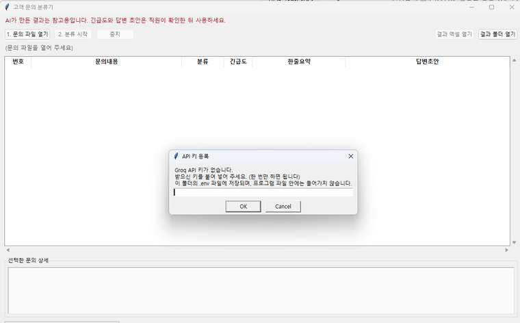
남에게 줄 폴더에는 키를 넣지 않았기 때문입니다. 받은 키를 붙여 넣고 OK를 누르면 그 폴더의 .env에 저장되고, 다음부터는 묻지 않습니다. 키 없이 닫으면 "API 키가 없어 분류를 시작할 수 없습니다"가 나오니, 프로그램을 다시 열어 키를 넣으면 됩니다.
- 처음 실행할 때 파란 "Windows의 PC 보호" 창은 뜰 수 있습니다. 회사 서명(유료 인증서)이 없는 파일이면 거의 다 뜹니다. 추가 정보 → 실행을 누르면 됩니다.
- 회사 백신이 막는지는 그 회사 PC에서 직접 해 봐야 압니다. 막히면 보안 담당자에게 폴더 속 .py 파일을 보여 주고 허용을 받습니다.
- 동료는 각자 자기 Groq 키를 .env에 넣어 씁니다. 같은 키를 여럿이 쓰면 무료 한도를 나눠 써서 느려지거나 멈춥니다.
준비 · 파이썬이 설치됐는지 다시 확인 필수
왜 하나요? 오늘 프로그램은 파이썬으로 만듭니다. 파이썬이 없으면 클로드가 프로그램을 써도 실행해 볼 수 없습니다. STEP 0 「준비」에서 파이썬 버전이 나왔다면 이 카드는 건너뜁니다. STEP 0을 건너뛰었거나 설치가 안 됐던 분만 여기서 설치합니다.
| 낯선 말 | 쉬운 말 |
|---|---|
| 파이썬 (Python) | 프로그램을 쓰는 언어이자, 그 프로그램을 돌려 주는 무료 프로그램. 한 번만 설치하면 됩니다. |
| winget (윈겟) | 윈도우에 들어 있는 "프로그램 설치 도우미". 클로드가 이것으로 파이썬을 대신 설치합니다. |
| openpyxl | 파이썬이 엑셀 파일을 만들 때 쓰는 추가 부품. 클로드가 함께 설치합니다. |
- 코드 화면에서 3차시_시작폴더를 연결한 세션에 아래 프롬프트를 붙여 넣고 Enter.
- "설치해도 될까요?"처럼 묻는 창이 뜨면 허용, 클로드가 고르게 하면 「설치하고 테스트」 쪽을 고릅니다.
- 윈도우가 "이 앱이 디바이스를 변경하도록 허용하시겠습니까?"라고 물으면 예. (공용 PC에서 관리자 비밀번호를 물으면 손을 들어 주세요)
- 클로드가 "Python 3.…" 버전을 알려 주면 끝입니다.
이 컴퓨터에 파이썬이 있는지 확인하고, 없으면 winget으로 공식 파이썬을 설치해 줘. (아나콘다는 말고 기본 파이썬으로.) 설치가 끝나면 버전을 확인하고, 엑셀 파일을 만들 때 필요한 부품(openpyxl)도 설치해 줘.
- 갑자기 모르는 사람 사진이나 그림 창이 열리면: 놀라지 마세요. 화면 부품(tkinter)에 원래 딸려 오는 견본 그림(예: ouster.png)이 클로드가 부품을 확인하는 중에 그림 보기 프로그램으로 열린 것입니다. 바이러스가 아닙니다. 창을 닫고 클로드에게
방금 그림 창이 열렸어. 왜 열렸는지 알려 주고, 앞으로 그림이나 창은 띄우지 마라고 남기면 됩니다. - 설치는 끝났는데 "python을 찾을 수 없습니다"가 나오면: 클로드 앱을 완전히 닫았다가 다시 열고 같은 세션에서
파이썬이 설치됐는지 다시 확인해 줘 - 관리자 권한 때문에 끝내 설치가 안 되면: 손을 들어 주세요. 집에서는
설치 없이 이 PC에 있는 파워셸로 같은 화면 프로그램을 만들어 줘로 대신할 수 있습니다.
실습 ⑤ 화면 있는 문의 분류기 만들기 필수
왜 하나요? 오늘의 결과물, 문의 분류 프로그램을 만듭니다.
이번에는 상황을 설명한 부탁으로, 코드 화면에서 만듭니다. 이 프로그램은 파이썬으로 만들고, 화면(창)이 뜹니다. 파일을 고르고, 시작 버튼을 누르면 진행 막대가 차고, 끝나면 엑셀이 나옵니다.
프로그램 화면의 실제 모습은 STEP 0 「오늘 만드는 것」의 화면을 참고하세요.
교육장 PC에서 실제로 만든 프로그램 화면입니다. 내 프로그램의 모양과 버튼 이름은 이것과 다를 수 있습니다. 파일을 고르는 버튼, 시작 버튼, 결과 표가 있으면 됩니다.
- 실습 ④를 한 채팅 창은 닫아 둡니다. 코드 화면에서 3차시_시작폴더를 연결한 세션의 입력 칸에 아래 프롬프트를 붙여 넣고 Enter.
- "이 명령을 실행해도 될까요?" 같은 창이 뜨면 내용을 한 번 읽고 허용을 누릅니다. 여러 번 물을 수 있습니다.
- 잠시 기다립니다. 클로드가 프로그램을 쓰고, 화면 없이 한 번 돌려 30건이 다 분류됐는지 확인합니다. 화면 창은 끝난 뒤 내가 직접 열어 봅니다.
1교시_문의분류 폴더의 고객문의_30줄.csv를 분류하는 파이썬 프로그램을 만들어 줘. - 앞에서 채팅이 만든 문의분류기.py, 실행.bat, requirements.txt, __pycache__ 폴더가 있으면 지우고 새로 만들어 줘. - 파이썬은 앞에서 설치했어. 혹시 없으면 공식 파이썬을 설치해 줘. (아나콘다는 말고, 기본 파이썬으로.) - 화면이 있는 프로그램으로 만들어 줘: [문의 파일 고르기] 버튼, [분류 시작] 버튼, 진행 막대와 '몇 건 처리 중' 표시, 끝나면 분류별 개수와 [결과 엑셀 열기] 버튼. - AI는 Groq API를 써. 키는 같은 폴더 .env의 GROQ_API_KEY에서 읽고, 코드 안에는 절대 키를 쓰지 마. - Groq의 모델 목록을 먼저 확인해서, 지금 쓸 수 있고 한국어를 잘하는 모델을 골라 줘. - 문의마다 ① 분류 ② 급한 정도(높음·보통·낮음) ③ 한 줄 요약 ④ 고객에게 보낼 첫 답장 초안을 만들어 줘. - 분류는 이 7가지야: 배송(지연·조회·주소 변경·분실) / 교환·환불(교환·반품·환불 진행) / 결제(이중 결제·쿠폰 오류·영수증·입금 확인) / 상품문의(색상·사이즈·소재·단체 주문) / 불량·파손(깨짐·불량·다른 상품이 옴) / 칭찬 / 기타. - 문의에 전화번호·이메일·주소가 있으면 Groq에 보내기 전에 ***로 가려 줘. 결과 엑셀에는 원래 문의를 그대로 남겨 줘. - 문의 내용이 든 칸은 '문의내용' 같은 이름으로 자동으로 찾아 줘. - 결과 엑셀에 "AI가 만든 참고용이니 직원이 확인하고 쓸 것"이라고 표시해 줘. - 결과는 '문의분류_결과.xlsx'로 저장하고, 분류별 개수를 정리한 요약 시트도 넣어 줘. - 프로그램 본체는 '문의분류_본체.py', 더블클릭으로 켜는 버튼은 '실행하기.bat'으로 만들어 줘. 오류가 나면 bat 창이 바로 닫히지 않게 해 줘. - Groq 무료 한도에 걸리지 않게 문의를 20건씩 묶어서 보내고, 요청 사이에 잠깐 쉬어 줘. - csv 파일은 엑셀에서 열어 다시 저장한 것도(한글 저장 방식이 달라져도) 읽을 수 있게 해 줘. - 확인용으로 화면 없이 돌리는 방법도 넣어 줘. 화면 창은 내가 닫을 때까지 멈춰 있으니, 너는 화면을 띄우지 말고 화면 없이 돌려서 30건이 모두 분류됐는지 확인해 줘. 화면은 내가 직접 열어 볼게. - 필요한 부품(엑셀 저장용 등)은 설치해 줘.
클로드가 프로그램을 쓰고, 부품을 설치하고, 실제로 돌려 보고, 고치기까지 합니다. 오늘 실습 중 가장 오래 걸립니다. 멈춘 게 아니니 창을 닫거나 새 부탁을 넣지 말고 그대로 두세요. 기다리는 동안 아래를 해 봅니다.
- 내가 먼저 분류해 보기 (AI와 대결). 파일 탐색기에서 고객문의_30줄.csv를 메모장으로 엽니다(마우스 오른쪽 → 연결 프로그램 → 메모장. 엑셀로 열지 마세요). 1~5번 문의를 읽고, 종이나 메모장에 내 분류와 급한 정도를 적어 둡니다. 프로그램이 끝나면 AI 결과와 비교합니다. 다르면 누가 맞을까요?
- 클로드가 지금 뭘 하는지 구경하기. 클로드 화면의 할 일 목록에서 지금 어느 단계인지 봅니다. 아래 「본체 다섯 덩어리」 그림에서 AI가 일하는 곳은 어디 하나뿐인지 찾아봅니다.
- 내 일에 써먹을 곳 적기. 내 업무에서 "매일 반복되고, 읽고 판단해야 하는 일"을 하나 적어 봅니다. (예: 견적 문의 메일 분류, 민원 정리, 설문 답변 정리) 위 「질문받기」 프롬프트의 첫 두 줄을 내 일로 바꿔 메모장에 써 두면, 집에서 그대로 써먹을 수 있습니다.
기다리는 동안 새 세션을 열어 다른 일을 시키지는 마세요. 같은 폴더를 두 직원이 동시에 고치면 꼬입니다.
빨강·초록 줄이 가득한 화면이 보여도 놀라지 마세요. 클로드가 코드를 고친 흔적입니다. 빨강은 지운 줄, 초록은 새로 쓴 줄입니다. 읽을 필요 없습니다. "아, 스스로 고치고 있구나"만 알면 됩니다. 예를 들어 Groq의 AI 모델 이름이 바뀌어 오류가 나면, 클로드가 새 모델 이름으로 고쳐서 다시 돌립니다.
폴더에 생긴 것 확인하기
윈도우키 + E → 3차시_시작폴더 → 1교시_문의분류 폴더를 엽니다.
| 파일 | 무엇인가요 |
|---|---|
| 실행하기.bat | 시작 버튼. 더블클릭하면 화면 창이 뜹니다. |
| 문의분류_본체.py | 프로그램의 본체. 메모장으로 열면 클로드가 쓴 파이썬 코드가 보입니다. (2차시의 사진정리.bat + 사진정리.ps1과 같은 짝꿍 구조) |
| .env | 내 키가 든 금고 |
| 문의분류_결과.xlsx | 결과물. 더블클릭하면 엑셀로 열립니다. |
내 손으로 프로그램 열어 보기
- 폴더의 실행하기.bat를 더블클릭합니다. 잠시 뒤 「문의 분류기」 창이 뜹니다. (까만 창이 같이 떠도 괜찮습니다. 닫지 마세요)
- [문의 파일 고르기]를 누르고 고객문의_30줄.csv를 고릅니다.
- [분류 시작]을 누릅니다. 진행 막대가 차고 "몇 건 처리 중"이 바뀝니다.
- 끝나면 분류별 개수가 나옵니다. [결과 엑셀 열기]를 누릅니다.
본체 안에는 무엇이 들어 있나요? (다섯 덩어리)
| 순서 | 하는 일 | 누가 하나 |
|---|---|---|
| ① 금고 열기 | .env에서 키를 꺼냅니다 | 코드 (공짜) |
| ② 문의 읽기 | csv 파일의 문의 30건을 읽습니다 | 코드 (공짜) |
| ③ 묶고 지시 붙이기 | 20건씩 묶고 "이렇게 분류해라"는 지시문을 붙입니다 | 코드 (공짜) |
| ④ Groq 부르기 | API로 보내고 판단 결과를 받습니다 | AI (여기만 AI) |
| ⑤ 엑셀 저장 | 분류·급한 정도·요약·답장 초안을 엑셀에 씁니다 | 코드 (공짜) |
③의 지시문을 고치면 분류 기준이 바뀝니다. STEP 4에서 '재입고 문의'를 추가하는 일이 바로 이 부분을 고치는 것입니다.
결과 엑셀 살펴보기
- 화면의 [결과 엑셀 열기]를 누르거나, 문의분류_결과.xlsx를 더블클릭합니다.
- 첫 시트: 문의 30건 옆에 분류, 급한 정도, 한 줄 요약, 답장 초안이 붙어 있는지 봅니다.
- 아래쪽 시트 탭에서 요약 시트를 눌러 분류별 개수를 봅니다.
- 이상한 분류가 있나요? 2~3건만 골라 내 생각과 맞는지 봅니다. AI가 한 일은 사람이 확인하는 습관입니다.
- 엑셀을 닫습니다. (열어 둔 채로 다시 돌리면 저장이 안 됩니다)
- 갑자기 모르는 사람 사진이나 그림 창이 열리면: 놀라지 마세요. 화면 부품(tkinter)에 원래 딸려 오는 견본 그림(예: ouster.png)이 클로드가 부품을 확인하는 중에 그림 보기 프로그램으로 열린 것입니다. 바이러스가 아닙니다. 창을 닫고 클로드에게
방금 그림 창이 열렸어. 왜 열렸는지 알려 주고, 앞으로 그림이나 창은 띄우지 마라고 남기면 됩니다. - "401" 또는 "Invalid API Key": .env의 키 앞뒤에 띄어쓰기나 따옴표가 들어갔는지 확인하세요.
- "429" 또는 "Rate limit": 무료 한도가 잠깐 쉬라고 한 것.
429 오류가 나. 한 번에 10건씩 보내고 더 오래 쉬어 줘 - 파이썬 설치가 관리자 권한 때문에 안 되면 손을 들어 주세요. 집에서 끝내 안 되면:
파이썬 설치가 안 돼. 설치 없이 이 PC에 있는 파워셸로 같은 화면 프로그램을 다시 만들어 줘 - 클로드가 화면을 띄운 채 멈춰 있으면: 떠 있는 프로그램 창을 닫으면 이어서 진행합니다.
- 파이썬을 설치했는데 못 찾는다고 하면: 클로드 앱을 완전히 닫았다가 다시 열고 같은 세션에
파이썬이 설치됐는지 다시 확인하고 이어서 진행해 줘 - 실행하기.bat를 눌렀는데 화면 창이 안 뜨고 까만 창만 나오면:
실행하기.bat를 눌렀는데 화면이 안 떠. 오류를 확인해서 고쳐 줘 - 결과 엑셀의 한글이 깨지면:
결과 파일 한글이 깨져. 인코딩(글자를 저장하는 방식)을 고쳐서 다시 만들어 줘 - 빨간 글씨가 나오면 당황하지 말고 그대로 두세요. 클로드가 스스로 고쳐서 다시 시도합니다.
실습 ⑥ 클로드 없이 돌려 보기 필수
왜 하나요? 클로드 앱 없이도 돌아가는지 확인합니다. 이게 되어야 동료도, 내일 아침의 나도 버튼만 눌러 씁니다.
이 실습이 오늘의 핵심입니다. 클로드에게 한마디도 하지 않고 새 문의를 처리합니다.
- 클로드 앱 창을 최소화합니다. 이제부터 클로드는 건드리지 않습니다.
- 파일 탐색기에서 고객문의_30줄.csv를 더블클릭해 엑셀로 엽니다.
- 맨 아래 빈 줄(32번째 줄)에 문의를 하나 지어 넣습니다. 번호 칸
31, 접수일 칸2026-11-16, 채널 칸카톡, 문의내용 칸에 내 마음대로. (예: 어제 받은 장갑 한 짝이 없어요. 어떻게 하면 되나요?) - Ctrl + S로 저장합니다. "CSV 형식으로 계속 저장할까요?"라고 물으면 예(형식 유지)를 누르고 엑셀을 닫습니다.
- 실행하기.bat를 더블클릭합니다. 화면 창이 뜹니다.
- [문의 파일 고르기]를 눌러 고객문의_30줄.csv를 고르고, [분류 시작]을 누릅니다. 진행 막대가 차는 것을 지켜봅니다.
- 끝나면 [결과 엑셀 열기]를 누릅니다. 31번째 내 문의가 분류되어 있나요?
엑셀 32번째 줄에 이렇게 넣습니다 (예시)
| 번호 | 접수일 | 채널 | 문의내용 |
|---|---|---|---|
| 30 | … | … | (원래 있던 마지막 문의) |
| 31 | 2026-11-16 | 카톡 | 어제 받은 장갑 한 짝이 없어요. 어떻게 하면 되나요? |
클로드는 쉬고 있었고, 내가 만든 프로그램이 직접 Groq를 불러서 일했습니다. 내 클로드 사용량은 하나도 줄지 않았습니다. 동료에게 줄 때는 .env(내 키)는 빼고 주고, 동료는 자기 키를 넣습니다. 동료 PC에도 파이썬이 있어야 하는데, 없다면 아래 「한 걸음 더 · exe」가 그 방법입니다. 이것이 "내 프로그램이 AI를 부른다"입니다.
- "Windows의 PC 보호" 파란 창이 뜨면: 추가 정보 → 실행을 누릅니다. 내가 방금 만든 파일이라 괜찮습니다.
- 내 문의가 결과에 없으면: csv를 저장할 때 엑셀을 닫았는지, 결과 엑셀을 열어 둔 채 돌리지 않았는지 확인하세요.
- csv를 열었더니 한글이 깨져 있으면: 저장하지 말고 닫은 뒤 손을 들어 주세요.
파이썬이 없는 PC에서도 더블클릭만으로 열리는 하나의 exe 파일로 포장할 수 있습니다. 단, 공용 PC의 백신이 막을 수 있으니 집에서 해 보세요.
문의분류_본체.py를 exe 파일 하나로 포장해 줘. 포장이 끝나면 어디에 만들어졌는지 알려 주고, .env 파일은 exe 안에 넣지 말고 같은 폴더에 따로 두게 해 줘.
실습 ⑦ 스킬 받아 쓰기 선택
왜 하나요? 인스타에서 말하는 "스킬 깔면 끝"이 실제로 무엇인지 받아서 열어 봅니다.
인스타에서 "깃허브에서 스킬 깔면 끝!"이라는 말을 자주 봅니다. 오늘 직접 하나 받아서 써 보고, 그 안을 열어 정체를 확인합니다.
스킬은 폴더 하나입니다. 안에 SKILL.md라는 글 파일이 있고, "이럴 땐 이렇게 해라"는 규칙이 적혀 있습니다. 2차시의 CLAUDE.md와 같은 종류의 글입니다. 딸깍 설치의 정체는 규칙 글이 든 폴더를 내 폴더에 복사하는 것입니다.
오늘 받을 스킬은 humanizer입니다. AI가 쓴 한국어에는 특유의 번역투(~를 통해, ~되어진다)와 쉼표 과다가 있는데, 이 스킬이 그런 AI 티를 40가지 패턴으로 찾아 자연스럽게 고쳐 줍니다. 우리 분류기가 만든 답장 초안에 써 봅니다. (깃허브 daleseo/korean-skills 저장소, MIT 라이선스)
1) 깃으로 스킬 받아 오기
깃은 파일을 고친 기록을 남기는 무료 프로그램인데, 깃허브에 있는 남의 폴더를 통째로 받아 오는 일도 합니다. 자세한 건 STEP 4에서 배우고, 지금은 클로드가 대신 받아 줍니다. 깃이 없다고 나오면 아래 막힐 때 상자의 프롬프트로 먼저 설치하세요.
저장소(리포지토리)는 깃허브에 올려 둔 폴더 하나를 말합니다. 남이 공개해 둔 저장소는 누구나 받아 올 수 있습니다.
깃허브의 daleseo/korean-skills 저장소를 깃으로 받아서, 그 안의 skills/humanizer 폴더만 3차시_시작폴더 바로 아래의 .claude/skills/humanizer로 복사해 줘. (1교시_문의분류 안이 아니라 3차시_시작폴더 바로 아래야.) 다 받으면 그 폴더 안에 어떤 파일이 있는지 보여 주고, 받으려고 만든 임시 폴더는 지워 줘. 깃이 없으면 알려 줘.
받고 나면 내 폴더는 이렇게 됩니다
.claude 폴더가 파일 탐색기에서 안 보이면: 탐색기 위쪽 보기 → 표시 → 숨긴 항목을 켭니다.
2) 답장 초안에 써 보기
humanizer 스킬로 문의분류_결과.xlsx의 답장 초안 5개에서 AI 티를 없애 줘. 고치기 전과 후를 나란히 표로 보여 줘. 내용은 바꾸지 말고 말투만 자연스럽게.
전·후 표를 비교해 봅니다. 어색하던 문장이 자연스러워졌나요?
3) 딸깍의 정체 열어 보기
.claude/skills/humanizer 폴더의 SKILL.md가 어떤 규칙으로 되어 있는지 처음 배우는 사람 눈높이로 세 줄로 설명해 줘. 그리고 examples 폴더의 before-1.md와 after-1.md를 나란히 보여 줘.
스킬 폴더에 든 것은 규칙 글(SKILL.md)과 고치기 전·후 예시가 전부입니다. 마법이 아닙니다. 예시는 이런 식입니다.
| 고치기 전 | 고친 후 |
|---|---|
| …빠르게 진행되고 있으며, 다양한 형태로 구현되고 있고, 학습 경험을 혁신적으로 변화시키고 있습니다. | …빠르게 확산되고 있으며 여러 형태로 구현되고 있습니다. 학습 경험을 크게 바꾸고 있죠. |
스킬은 클로드에게 주는 지시문입니다. 출처를 모르는 스킬은 SKILL.md를 먼저 읽어 보고(클로드에게 "이 스킬이 무슨 지시를 하는지 알려 줘"라고 시켜도 됩니다) 쓰세요. 2차시의 보안 이야기와 같은 습관입니다.
- 스킬을 썼는데 반응이 없으면: 프롬프트에 humanizer 스킬을 써서라고 이름을 넣어 다시 시켜 보세요. 그래도 안 되면 클로드 앱을 껐다 켜고 같은 세션을 다시 엽니다. (새 세션을 열면 오늘 한 일을 기억하지 못해 STEP 5 정리가 어려워집니다)
- 답장 초안이 원래 자연스러워 전·후 차이가 작으면:
humanizer 스킬로 .claude/skills/humanizer/examples/before-1.md를 고쳐서 고치기 전과 후를 나란히 보여 줘 - 깃이 없다고 나오면: 아래 프롬프트로 설치한 뒤 실습 프롬프트 1을 다시 붙여 넣습니다. 교육장에서는 손을 들어 주세요.
이 컴퓨터에 깃(git)이 설치되어 있는지 확인하고 버전을 알려 줘. 없으면 winget으로 Git for Windows를 설치하고, 설치가 끝나면 버전을 다시 확인해 줘.
깃허브의 epoko77-ai/im-not-ai도 한국어 AI 티를 지우는 스킬입니다. 더 강력하지만 파일이 많고 무거워서 오늘은 쓰지 않습니다. 집에서 같은 방법(깃으로 받아 폴더 복사)으로 써 보세요.
확장 인사이트 선택
- 자동화: 예약 실행과 붙이면 "매일 아침 문의 자동 분류"가 됩니다. (세 장면 ①)
- 배포: 8차시에는 이 프로그램을 웹앱으로 바꿔 내 홈페이지에 올립니다. 그때는 키를 버셀의 '환경변수'라는 금고에 넣습니다. (세 장면 ③)
- 대량 처리: 1,000건도 20건씩 나눠 보내니 똑같이 꼼꼼합니다.
- 부품 교체: AI 부분만 클로드·다른 모델로 바꿔 끼울 수 있습니다.
한걸음더_고객문의_1000줄.csv도 같은 프로그램에서 고를 수 있게 확인해 줘. 다 끝나면 걸린 시간과 분류별 개수를 화면에 보여 줘. 한도에 걸리면 알아서 쉬었다가 이어서 하게 해 줘.
문의분류_본체.py의 화면 없이 돌리는 방법을 써서, 폴더의 고객문의_30줄.csv를 자동으로 처리하고 결과 파일 이름 뒤에 시각을 붙이게 해 줘. 그 방법을 윈도우 작업 스케줄러에 지금부터 3분 뒤 한 번만 실행되게 등록하고, 확인이 끝나면 등록한 예약을 지워 줘.
공용 PC이므로 예약은 확인 후 꼭 지웁니다.
이 STEP에서 기억할 한 가지
채팅은 코드를 써 주고, 코드 화면은 프로그램을 완성해 준다. 완성된 프로그램은 클로드 없이 AI를 불러 일한다.
깃: 기록하고, 망가뜨리고, 되돌리기
방금 만든 프로그램을 깃으로 기록합니다. 그리고 일부러 망가뜨린 뒤 기록으로 되살립니다.
시작 전에 준비
| ✅ 있어야 하는 것 | ▶ 먼저 해 둘 것 |
|---|---|
|
|
이 STEP에서 하는 일
만드는 것: 프로그램 폴더의 저장 기록. "첫 완성", "재입고 분류 추가"처럼 기록이 한 줄씩 쌓입니다.
왜 하나요? 클로드에게 "고쳐 줘" 했다가 프로그램이 망가지면, 코드를 못 읽는 우리는 직접 고칠 수 없습니다. 기록이 있으면 잘 되던 때로 바로 돌아갑니다.
깃은 수첩, 깃허브는 창고 · 언제, 왜 쓰나요?
오늘 처음 배우는 도구입니다. 클로드 코드 화면을 쓰려고 컴퓨터에 이미 깔려 있던 프로그램인데, 우리가 직접 써 보는 건 오늘이 처음입니다.
수첩은 내 컴퓨터에, 창고는 인터넷에 있습니다.
| 깃 (Git) | 깃허브 (GitHub) | |
|---|---|---|
| 정체 | 내 컴퓨터에 까는 무료 프로그램 | 인터넷 사이트 (github.com) |
| 하는 일 | 파일을 언제 어떻게 고쳤는지 기록해서, 잘못 고쳐도 되돌릴 수 있게 함 | 그 기록을 인터넷에 보관하고, 다른 컴퓨터·다른 서비스와 연결함 |
| 로그인 | 필요 없음 | 계정과 로그인 필요 |
| 비유 | 한글 문서의 '이전 버전 보기'를 폴더 전체에 | 그 수첩을 올려 두는 클라우드 창고 |
「보고서_최종」, 「보고서_진짜최종」, 「보고서_최종(2)」… 깃을 쓰면 파일은 하나만 두고, 고친 기록이 수첩에 차곡차곡 쌓입니다.
① 지키기 · STEP 4
잘 될 때 수첩에 적어 두면, 망가져도 그때로 돌아갑니다.
② 옮기기 · STEP 6
인터넷 창고를 거쳐, 어느 PC에서나 내 위키를 이어 씁니다.
③ 받아 오기 · STEP 3
남이 만들어 공개한 것을 내 폴더로 가져옵니다.
언제 쓰나요?
오늘 세 번, 그리고 8차시에 내 앱을 인터넷에 올릴 때.
깃은 내 작업을 지키고, 옮기고, 받아 오는 도구입니다.
코드를 배우는 사람에게 깃이 꼭 필요한 이유
우리는 코드를 직접 쓰지 않고 클로드에게 시킵니다. 그런데 "이것 좀 고쳐 줘"라고 했다가 잘 돌아가던 프로그램이 망가지는 일이 생깁니다. 코드를 읽을 줄 모르면 어디가 망가졌는지 찾기도 어렵습니다.
깃은 바이브 코딩의 안전벨트입니다. 개발자들이 매일 쓰는 도구이고, 우리는 명령어 대신 말로 씁니다.
| 낯선 말 | 쉬운 말 |
|---|---|
| 저장소 (repository, 리포지토리) | 깃이 기록을 맡은 폴더 하나 |
| 커밋 (commit) | 수첩에 기록 한 줄 남기기 |
| .gitignore (깃이그노어) | 수첩에 적지 않을 파일 목록 (예: .env 금고) |
실습 ⑧ 깃 확인하고, 없으면 설치하기 필수
왜 하나요? 기록 기능(깃)을 쓰려면 이 컴퓨터에 깃이 깔려 있어야 합니다. STEP 0을 건너뛰고 여기부터 시작한 분도 이 실습만 하면 됩니다.
| 낯선 말 | 쉬운 말 |
|---|---|
| 깃 (Git, Git for Windows) | 파일을 고친 기록을 남겨 주는 무료 프로그램. 윈도우용 이름이 Git for Windows입니다. |
| winget (윈겟) | 윈도우에 들어 있는 "프로그램 설치 도우미". 클로드가 이것으로 대신 설치합니다. |
- STEP 1~3을 작업한 코드 세션(3차시_시작폴더 연결)에 아래 프롬프트를 붙여 넣고 Enter.
- 설치해도 되는지 물으면 허용. 윈도우가 "이 앱이 디바이스를 변경하도록 허용하시겠습니까?"라고 물으면 예.
- "git version 2.…"처럼 버전이 나오면 끝입니다. 이미 깔려 있으면 설치 없이 버전만 알려 줍니다.
이 컴퓨터에 깃(git)이 설치되어 있는지 확인하고 버전을 알려 줘. 없으면 winget으로 Git for Windows를 설치하고, 설치가 끝나면 버전을 다시 확인해 줘.
- 설치는 됐는데 "git을 찾을 수 없습니다"가 나오면: 클로드 앱을 완전히 닫았다가 다시 열고, 같은 세션에서
깃이 설치됐는지 다시 확인해 줘 - winget으로 설치가 안 되면: git-scm.com에서 직접 받아 설치 창에서 계속 「Next」, 마지막에 「Install」을 누릅니다.
- 교육장 PC에서 관리자 비밀번호를 물으면 손을 들어 주세요. (교육장 PC에는 보통 이미 깔려 있습니다)
실습 ⑨ 첫 기록 남기기 필수
왜 하나요? 잘 되는 지금 상태를 저장해 두어야, 나중에 망가져도 여기로 돌아올 수 있습니다.
프롬프트를 붙여 넣고, Enter 전에 내이름과 내이메일 두 군데를 내 것으로 고칩니다.
깃은 "누가 기록했는지"를 이름과 이메일로 적어 둡니다. 이름은 별명이나 영문도 되고, 이메일은 깃허브에 가입한(할) 이메일을 쓰면 좋습니다. 로그인하는 것이 아니라 꼬리표만 붙이는 것입니다.
1교시_문의분류 폴더를 깃 저장소로 만들고, 지금 상태를 첫 기록으로 남겨 줘. 기록 메모는 '문의 분류기 첫 완성'으로 해 줘. 여기는 여러 사람이 쓰는 공용 PC라서 깃 이름·이메일 설정은 이 폴더에만(--local) 해 줘. 이름은 '내이름', 이메일은 '내이메일'로. 기록을 남긴 뒤, .env 파일이 기록에 들어가지 않았는지 확인해서 결과를 보여 줘.
확인할 것
- 클로드가 "기록(커밋)을 남겼습니다"라고 알려 줍니다.
- .env는 기록에서 빠졌다는 확인이 나와야 합니다. STEP 1에서 만든 .gitignore 덕분입니다. 수첩에 비밀번호는 적지 않습니다.
.env가 기록에 들어갔다고 나오면: .env를 기록에서 빼고 .gitignore에 추가한 다음 기록을 다시 남겨 줘
실습 ⑩ 고치고 → 기록하고 → 망가뜨리고 → 되돌리기 필수
왜 하나요? 실제로 망가졌을 때 살릴 수 있는지 미리 연습합니다.
1) 기능을 하나 고치고 기록합니다
재입고 문의는 "품절된 상품이 언제 다시 들어오나요?" 같은 문의입니다. 지금 프로그램에는 이 분류가 없어서 하나 추가해 봅니다.
문의 분류 항목에 '재입고 문의'를 하나 추가하고, 화면 없이 돌리는 방법으로 다시 실행해서 잘 되는지 확인해 줘. 잘 되면 '재입고 분류 추가'라는 메모로 기록을 남겨 줘. 그다음 지금까지의 기록 목록을 표로 보여 줘. (언제, 어떤 메모로, 어떤 파일이 바뀌었는지)
표에 기록이 두 줄 보이면 됩니다. 이것이 수첩입니다.
2) 일부러 망가뜨립니다
연습을 위해 문의분류_본체.py 파일을 일부러 망가뜨려 줘. 파일 내용의 뒤쪽 절반을 지워 줘. 그다음 화면 없이 돌리는 방법으로 실행해서 오류가 나는 것을 보여 줘.
빨간 오류가 나옵니다. 코드를 읽을 줄 모르는 우리는 어디를 고쳐야 할지 모릅니다.
3) 기록으로 되살립니다
깃 기록을 써서 마지막 기록('재입고 분류 추가') 상태로 되돌려 줘. 그다음 화면 없이 돌리는 방법으로 다시 실행해서 정상으로 돌아왔는지 확인해 줘.확인이 끝나면 실행하기.bat를 직접 더블클릭해서 화면 창도 정상인지 봅니다.
망가진 코드를 한 줄도 읽지 않고 살려 냈습니다. 앞으로 클로드에게 무언가 고치게 하기 전에는 "먼저 기록부터 남겨 줘"라고 말하는 습관을 들이세요.
첫 번째 기록과 두 번째 기록 사이에 무엇이 달라졌는지, 코드를 모르는 사람도 알 수 있게 쉬운 말로 설명해 줘.
- "Author identity unknown" 또는 이름·이메일을 묻는 오류:
이 폴더에만 깃 이름은 '내이름', 이메일은 '내이메일'로 설정하고 다시 기록해 줘 - 결과 엑셀을 열어 둔 채로 실행하면 오류가 납니다. 엑셀을 닫고 다시 시켜 주세요.
이 STEP에서 기억할 한 가지
고치기 전에 기록부터. 깃이 있으면 망가져도 되돌릴 수 있다.
오늘 배운 것을 내 위키에 쌓기
지난주 양천상사 위키는 연습이었습니다. 오늘부터 내 위키를 시작해 8주 동안 키웁니다.
시작 전에 준비
| ✅ 있어야 하는 것 | ▶ 먼저 해 둘 것 |
|---|---|
|
|
이 STEP에서 하는 일
만드는 것: 내 위키: 2교시_내위키/wiki 폴더 안에 "API 키", "깃", ".env" 같은 개념별 정리 페이지가 생깁니다.
왜 하나요? 오늘 배운 것과 내가 막혔던 곳을 정리해 두면, 다음 시간에 클로드가 이걸 읽고 이어서 도와줍니다.
끝나면 내 폴더는 이렇게 됩니다
내 위키에 들어가는 두 가지
수강생 여러분은 메모를 직접 쓰지 않아도 됩니다. 정리는 클로드가 오늘의 세션 기록을 보고 대신 써 줍니다. 사람마다 막힌 곳과 고친 방법이 달라서, 위키도 저절로 "내 것"이 됩니다.
실습 ⑪ 오늘 한 일 정리하기 필수
왜 하나요? 오늘 이 세션에서 한 일과 막힌 곳을 글로 남겨 위키 재료로 씁니다.
STEP 1~4를 작업한 그 세션(3차시_시작폴더 연결)에 그대로 붙여 넣습니다. (오늘 한 일을 기억하는 직원에게 시키는 것)
오늘 이 세션에서 우리가 한 작업(Groq API 키를 .env에 숨기기, 문의를 클로드에게 직접 분류시킨 것과 프로그램으로 만든 것, 채팅과 코드 비교, 화면 있는 파이썬 프로그램, 스킬 받아 쓰기, 깃으로 기록하고 되돌린 것)을 처음 배우는 사람 눈높이로 정리해 줘. - 내가 막혔던 부분과 어떻게 해결했는지 꼭 넣어 줘. - '언제 클로드에게 직접 시키고, 언제 프로그램(+API)으로 만드는지'를 오늘 경험으로 정리해 줘. - API 키 값은 절대 쓰지 마. - 2교시_내위키/raw 폴더에 '3차시_내가한일.md'로 저장해 줘.
프롬프트 맨 끝에 이렇게 붙이면 됩니다.그리고 내 메모도 같이 넣어 줘: (예) 깃은 기록 수첩이다, 키는 절대 채팅에 붙이지 말 것
실습 ⑫ 위키로 만들기 필수
왜 하나요? 재료를 개념별 페이지로 정리해서, 다음 시간에 클로드가 읽을 수 있게 합니다.
세션은 연결한 폴더의 CLAUDE.md를 먼저 읽고 일합니다. 위키 규칙은 2교시_내위키 폴더에 있어서, 위키를 만들 때는 그 폴더를 연결한 새 세션에서 합니다.
- 코드 화면(왼쪽 위 </>)에서 「+ 새로 만들기」를 누르고 (이 새 세션이 세션 B입니다), 입력 칸 아래 폴더 칸에서 3차시_시작폴더 안의 2교시_내위키를 선택합니다. (이 폴더를 연결해야 그 안의 CLAUDE.md 규칙을 먼저 읽습니다)
- 「신뢰하시겠습니까?」 → 신뢰
- raw 폴더에 3차시_내가한일.md가 들어 있는지 파일 탐색기로 한 번 확인합니다.
- 아래 프롬프트를 붙여 넣습니다.
CLAUDE.md 규칙대로 raw 폴더의 자료를 모두 읽고 위키를 만들어 줘. 개념마다 페이지를 만들고 서로 연결해 줘. 다 하면 만든 페이지 목록과 각 페이지의 한 줄 설명을 표로 보여 줘.
위키 페이지는 이렇게 생겼습니다 (예시) 참고 · 사람마다 다르게 나올 수 있어요
한 줄 정의: 내 프로그램이 AI를 쓸 때 내는 비밀번호.
쉬운 비유: 전화(API)를 걸 때 필요한 비밀번호.
수업에서 해 본 것: Groq에서 키를 받아 .env 금고에 넣었다.
내가 막혔던 곳: 등호 뒤에 띄어쓰기가 들어가 401 오류 → 지우고 해결.
관련 페이지: [[.env]] · [[API]] · [[깃이그노어]]
출처: 3차시_교안.md, 3차시_내가한일.md
[[ ]]로 묶인 글자는 다른 페이지로 가는 연결입니다. 페이지 내용은 사람마다 다릅니다. 내가 막힌 곳이 들어가기 때문입니다.
"먼저 계획을 보여 드릴까요?"라고 물으면 응, 진행해 줘라고 답하면 됩니다. 연습용이니 그대로 진행해도 괜찮습니다.
실습 ⑬ 내 위키에 물어보기 필수
왜 하나요? 만든 위키가 실제로 쓸모 있는지 질문해서 확인합니다.
내 위키만 보고 답해 줘: API 키를 채팅창이나 깃허브에 올리면 왜 안 돼? 근거가 된 위키 페이지 이름도 알려 줘. 답이 괜찮으면 wiki/질문답변 폴더에 저장해 줘.
답이 쌓일수록 위키가 똑똑해집니다. 궁금한 것이 생길 때마다 물어보고, 좋은 답은 저장하세요.
옵시디언이 있다면 선택
- 옵시디언(obsidian.md에서 무료로 받음) 실행 → 왼쪽 아래 보관함 아이콘 → 폴더를 보관함으로 열기 → 2교시_내위키 선택
- 왼쪽 메뉴의 그래프 뷰 열기
- 점(페이지)과 선(연결)으로 내 지식이 이어진 모습을 봅니다.
옵시디언이 없어도 괜찮습니다. 위키 파일은 메모장으로도 열리고, 다음 단계에서 깃허브에 올리면 인터넷에서도 볼 수 있습니다.
이 STEP에서 기억할 한 가지
배운 것은 raw에 넣고, 정리와 연결은 클로드에게. 궁금하면 내 위키에 물어본다.
내 위키를 깃허브에 올리기
이제 USB를 들고 다니지 않아도 됩니다. 어느 컴퓨터에서든 내 위키를 가져와 이어 씁니다.
시작 전에 준비
| ✅ 있어야 하는 것 | ▶ 먼저 해 둘 것 |
|---|---|
|
|
이 STEP에서 하는 일
만드는 것: 깃허브(인터넷)에 나만 보는 저장소 my-wiki. 내 위키가 통째로 올라가 있습니다.
왜 하나요? 이 PC는 공용이라 다음 주엔 다른 자리일 수 있습니다. 인터넷에 올려 두면 USB 없이 어느 PC에서나 가져옵니다.
이번에는 창고(깃허브) 차례
- STEP 4에서 쓴 깃은 내 컴퓨터 안의 수첩이었습니다. 컴퓨터가 바뀌면 수첩도 없습니다.
- 깃허브는 그 수첩을 통째로 올려 두는 인터넷 창고입니다. 올려 두면 어느 컴퓨터에서든 가져올 수 있습니다.
- 원래 깃허브 로그인은 5차시(홈페이지 올리기)에 한다고 했습니다. 내 위키를 USB 없이 들고 다니기 위해 오늘 당겨서 합니다. 5차시에는 같은 창고에서 홈페이지를 올립니다.
| 낯선 말 | 쉬운 말 |
|---|---|
| 푸시 (push) | 수첩을 창고에 올리기 |
| 풀 (pull) · 클론 (clone) | 창고에서 가져오기 |
| Private · Public | 나만 보는 창고 · 누구나 보는 창고 |
수업 시작: "깃허브에서 내 위키 가져와 줘"
수업 끝: "오늘 배운 거 위키에 정리하고 깃허브에 올려 줘"
명령어는 클로드가 대신 칩니다. 우리는 말로 시킵니다.
실습 ⑭ 비공개 창고(저장소) 만들기 필수
왜 하나요? 위키를 올려 둘 나만의 인터넷 창고를 만듭니다.
- github.com/signup을 엽니다.
- 이메일, 비밀번호, 사용자 이름(영문 아이디)을 넣고 가입합니다. 「Continue with Google」로 가입해도 됩니다.
- 이메일로 온 확인 번호를 넣으면 끝입니다. 아이디와 비밀번호는 꼭 적어 두세요. 다음 주에도 씁니다.
- 크롬 주소창에
github.com/new를 입력하고 Enter. (여기 github.com/new를 눌러도 바로 열립니다) 로그인 화면이 나오면 내 아이디와 비밀번호로 로그인합니다. (또는 github.com 오른쪽 위 ＋ → New repository) - "Create a new repository" 화면이 나옵니다. Repository name 칸에
my-wiki라고 씁니다. 아래에 초록색으로 "my-wiki is available"이 뜨면 쓸 수 있는 이름입니다. (그림 ①) - Description(설명)은 비워 둡니다.
- Choose visibility 줄 오른쪽의 Public ▾ 버튼을 누르고 (그림 ②), 펼쳐진 목록에서 자물쇠 그림의 Private을 고릅니다. (그림 ③) ← 가장 중요
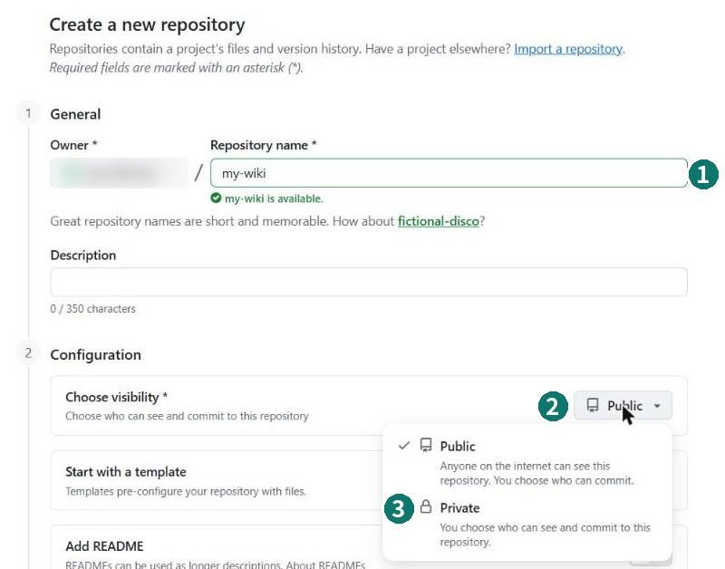
- 화면을 아래로 내립니다. 버튼이 Private으로 바뀌었는지 확인합니다. (그림 ③)
- Start with a template은 No template, Add README는 Off, Add .gitignore는 No .gitignore, Add license는 No license. 모두 처음 그대로 둡니다. (그림 ④, 하나라도 켜면 올릴 때 충돌이 납니다)
- 초록색 Create repository 버튼을 누릅니다. (그림 ⑤)
- "Quick setup"이라는 화면이 나옵니다. 주소 칸 왼쪽이 HTTPS인지 확인하고,
https://github.com/내아이디/my-wiki.git옆 복사 버튼(네모 두 개 겹친 그림)을 누릅니다.
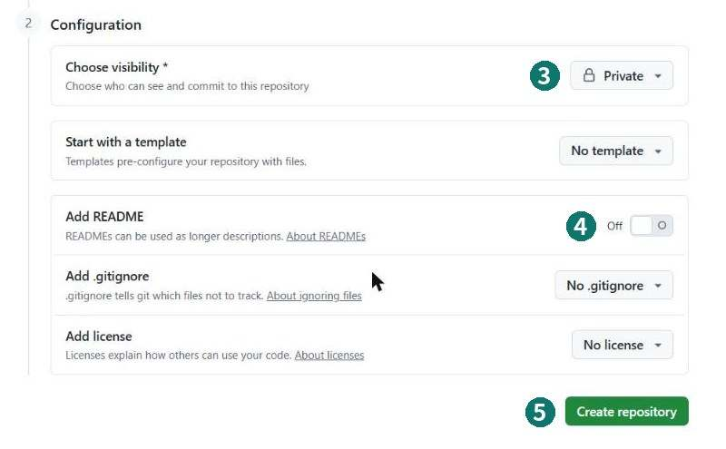
위키에는 내 메모가 들어가므로 반드시 Private. Public(공개)으로 만들면 누구나 볼 수 있습니다.
실습 ⑮ 위키 올리기 필수
왜 하나요? 다음 주 다른 PC에서도 내 위키를 가져오기 위해서입니다.
- 클로드 앱으로 돌아와 2교시_내위키 폴더를 연결한 세션을 엽니다. (STEP 5에서 위키를 만든 그 세션)
- 아래 프롬프트를 입력 칸에 붙여 넣습니다. 아직 Enter를 누르지 마세요.
- 프롬프트 안의 세 군데를 내 것으로 고칩니다:
내이름→ 내 이름(영문도 좋음),깃허브가입이메일→ 깃허브에 가입한 이메일, 주소 → 방금 복사한 주소로 바꿔 붙이기 - Enter. 실행해도 되는지 물으면 허용을 누릅니다.
이 폴더를 깃 저장소로 만들고 첫 기록을 남겨 줘. 기록 메모는 '3차시: 내 위키 시작'으로 해 줘. 여기는 여러 사람이 쓰는 공용 PC라서 깃 이름·이메일 설정은 이 폴더에만(--local) 해 줘. 이름은 '내이름', 이메일은 '깃허브가입이메일'로. 그다음 https://github.com/내아이디/my-wiki.git 에 올려 줘. 깃이 설치되어 있지 않으면 진행하지 말고 먼저 알려 줘.
올리는 순서 한눈에 보기
로그인 창이 뜨면
- "Connect to GitHub"(깃허브에 연결)이라는 작은 창이 뜹니다. Sign in with your browser(브라우저로 로그인)를 누릅니다.
- 크롬에 깃허브 화면이 열립니다. 초록색 Authorize(허락) 버튼을 누릅니다. 비밀번호를 다시 물으면 입력합니다.
- "Authentication Succeeded"(인증 성공)가 보이면 그 탭은 닫고 클로드 화면으로 돌아옵니다.
- 클로드가 "깃허브에 올렸습니다"라고 정리해 주면 끝입니다.
잘 올라갔는지 확인
- 크롬에서 아까 그 깃허브 화면(my-wiki)으로 가서 F5(새로고침)를 누릅니다.
- CLAUDE.md, raw, wiki가 목록에 보이면 성공입니다.
- 저장소 이름 my-wiki 옆에 Private 표시가 있는지 봅니다.
- wiki 폴더 → 아무 페이지나 눌러 보세요. 인터넷에서도 내 위키가 읽힙니다.
- "git을 찾을 수 없습니다": 이 PC에 깃이 없는 것. 손을 들어 강사님을 불러 주세요.
- "Permission denied" 또는 "403": 이 PC에 다른 사람의 깃허브 로그인이 남아 있는 것. STEP 7의 로그인 정보 지우기 프롬프트를 먼저 실행한 뒤 다시 올려 주세요.
- 로그인 창이 안 뜨면: 작업 표시줄에 숨어 있을 수 있습니다. 그래도 없으면
깃허브 로그인 창이 안 떠. 브라우저로 로그인하는 방법으로 다시 해 줘 - "rejected" 또는 "main / master" 이야기가 나오면:
기본 가지 이름을 main으로 맞춰서 다시 올려 줘
다음 주부터 이렇게 시작합니다
새 세션을 열고 (폴더는 바탕화면을 연결) 아래를 붙여 넣습니다. 주소는 내 것으로.
https://github.com/내아이디/my-wiki.git 에서 내 위키를 바탕화면의 '내위키' 폴더로 가져와 줘. 공용 PC라서 깃 이름·이메일 설정은 그 폴더에만 해 줘.
가져온 뒤에는 새 세션에서 바탕화면의 내위키 폴더를 연결해 이어서 씁니다.
수업 끝에는 이렇게 마칩니다
오늘 이 세션에서 배운 내용을 raw에 '○차시_내가한일.md'로 정리하고, CLAUDE.md 규칙대로 위키에 반영한 다음 깃허브에 올려 줘.
wiki/index.md 내용을 일부러 다 지워 줘. 확인했으면 깃 기록을 써서 지우기 전으로 되돌려 줘.
망쳐도 되돌릴 수 있다는 것, 이게 깃을 쓰는 이유입니다.
이 STEP에서 기억할 한 가지
수업 시작에는 "깃허브에서 내 위키 가져와 줘", 끝에는 "위키에 정리하고 깃허브에 올려 줘".
공용 PC 정리와 로그아웃
이 PC는 초기화되지 않습니다. 다음 사람이 내 계정으로 올리거나 내 키를 쓰지 않도록 꼭 정리합니다.
시작 전에 준비
| ✅ 있어야 하는 것 | ▶ 먼저 해 둘 것 |
|---|---|
|
|
이 STEP에서 하는 일
만드는 것: 새로 만드는 것은 없습니다. 이 PC에 남은 내 로그인과 키를 지웁니다.
왜 하나요? 공용 PC라서, 지우지 않으면 다음 사람이 내 깃허브와 내 Groq 키로 일할 수 있습니다.
실습 ⑯ 로그인 흔적 지우기 필수
왜 하나요? 다음 사람이 내 계정과 키를 쓰지 못하게 합니다.
앞의 두 가지는 클로드에게 시키고, 뒤의 두 가지는 내 손으로 합니다. 2교시_내위키를 연결한 세션이나 3차시_시작폴더 세션 어느 쪽에 붙여 넣어도 됩니다.
이 PC에 저장된 깃허브 로그인 정보를 지워 줘. 윈도우 자격 증명 관리자에 남은 github 관련 항목까지 찾아서 지우고, 다 지워졌는지 확인한 결과를 보여 줘. 그리고 3차시_시작폴더 안의 .env 파일(내 Groq 키)을 찾아서 지워 줘. 1교시_문의분류 폴더와 2교시_내위키 폴더에 넣은 깃 이름·이메일 설정도 지워 줘.
내 손으로 마무리
- 크롬에서 github.com 로그아웃 (오른쪽 위 프로필 → Sign out)
- 크롬에서 console.groq.com을 쓴 구글 계정 로그아웃
- 클로드 앱에서 로그아웃 (내 계정 메뉴 → 로그아웃)
- 깃허브 내 저장소 목록에서 my-wiki 옆에 Private 표시가 있는지 한 번 더 확인
- (선택) 시작 폴더는 지워도 됩니다. 내 위키는 깃허브에 있으니까요.
키가 없으니 이 PC에서는 더 돌아가지 않습니다. 그게 맞습니다. 집에서 다시 해 보려면 Groq에서 키를 새로 받아 .env에 넣으면 됩니다. 프로그램 파일(실행하기.bat, 문의분류_본체.py)은 지우지 않아도 괜찮습니다.
로그아웃하기 전에 해야 합니다. 깃허브에 비공개 저장소를 하나 더 만들어(이름 예: my-classifier, 실습 ⑭와 같은 방법) 주소를 복사한 뒤, 3차시_시작폴더 세션에 붙여 넣습니다.
1교시_문의분류 폴더의 깃 기록을 https://github.com/내아이디/my-classifier.git 에 올려 줘. 올리기 전에 .env와 결과 엑셀이 기록에 들어 있지 않은지 확인하고, 들어 있으면 빼고 올려 줘.
console.groq.com → API Keys에서 오늘 만든 키를 삭제하고, 다음에 새로 만들면 됩니다. 키는 언제든 다시 만들 수 있습니다.
오늘 배운 개발자 도구
| 도구 | 쉬운 말 | 오늘 한 일 |
|---|---|---|
| API | 프로그램이 AI에게 거는 전화선 | 내 프로그램이 Groq를 불렀다 |
| API 키 · .env | 비밀번호 · 금고 파일 | 키를 금고에 넣고 코드에는 쓰지 않았다 |
| bat · 파이썬 | 실행 버튼 · 프로그램의 본체 | 화면 있는 프로그램을 만들어 클로드 없이 돌렸다 |
| 스킬 | 규칙 글(SKILL.md)이 든 폴더 | 깃허브에서 받아 쓰고 안을 열어 봤다 |
| 깃 | 내 컴퓨터의 기록 수첩 | 기록하고, 망가뜨리고, 되돌렸다 |
| .gitignore | 수첩에 적지 않을 목록 | .env를 기록에서 뺐다 |
| 깃허브 | 인터넷 창고 | 내 위키를 비공개로 올렸다 |
모두 개발자들이 매일 쓰는 도구입니다. 우리는 명령어를 외우지 않고 말로 썼습니다.
학습 목표 다시 보기
- API와 API 키를 설명하고, 내 프로그램이 AI를 부르는 이유를 말할 수 있다
- 키를 .env에 숨길 수 있다
- 직접 시킬 일과 프로그램으로 만들 일, 채팅과 코드의 차이를 말할 수 있다
- 상황을 설명하는 부탁으로 화면 있는 파이썬 프로그램을 만들고 클로드 없이 실행할 수 있다
- 스킬을 받아 쓰고 안을 열어 볼 수 있다
- 깃으로 기록하고 되돌릴 수 있다
- 내 위키를 깃허브에 올리고 가져올 수 있다
다음 시간 미리 보기
4차시 · 홈페이지 만들기: 디자인 시안을 말로 만들고, 그 시안을 코드로 옮겨 내 소개 홈페이지 한 장을 만듭니다.
수업 시작에 "깃허브에서 내 위키 가져와 줘"로 출발합니다. 깃허브 아이디와 비밀번호를 꼭 기억해 오세요.